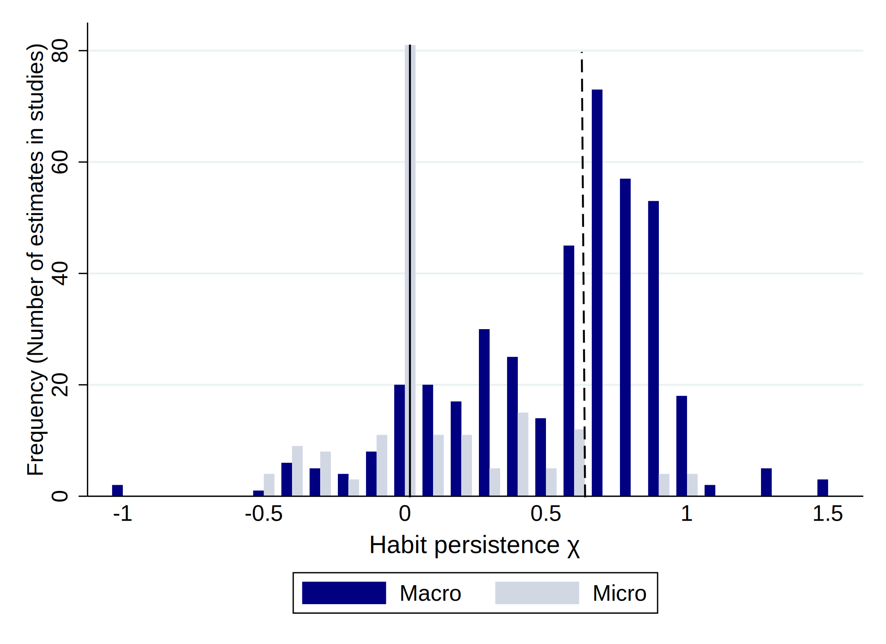
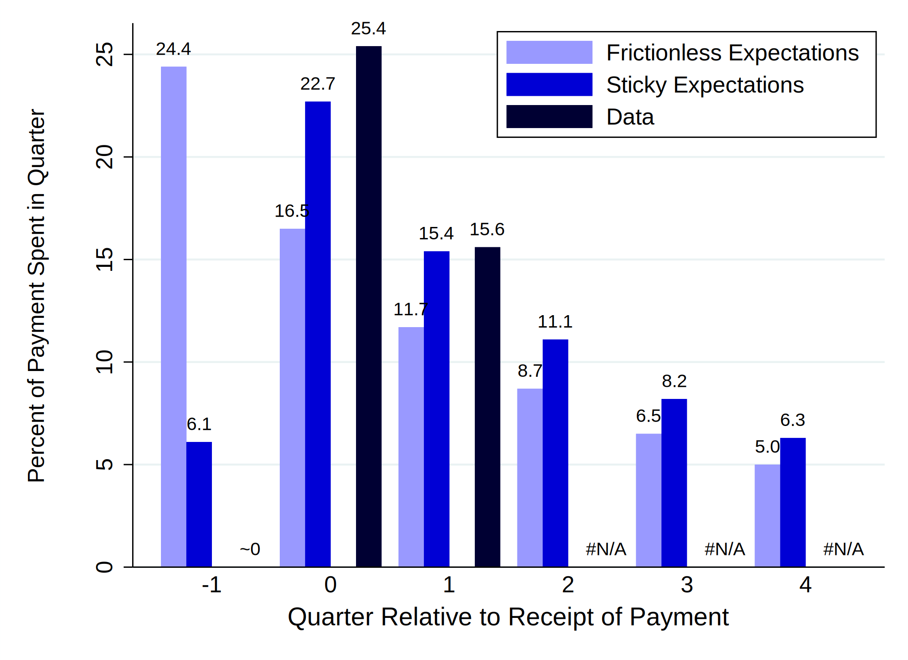
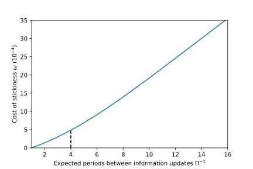

Abstract To match aggregate consumption dynamics, macroeconomic models must generate ‘excesssmoothness’ in consumption expenditures. But microfounded models are calibrated to match microdata, which exhibit no ‘excess smoothness.’ So standard microfounded models fail to match the macrosmoothness facts. We show that the micro and macro evidence are both consistent with amicrofounded model where consumers know their personal circumstances but have ‘stickyexpectations’ about the macroeconomy. Aggregate consumption sluggishness reflects consumers’imperfect attention to aggregate shocks. Our proposed degree of inattention has negligible utilitycosts because aggregate shocks constitute a tiny proportion of the uncertainty that consumersface.
The computational results in this paper were constructed using tools in the Econ-ARK/HARKtoolkit. The toolkit can be cited by its digital object identifier, 10.5281/zenodo.1001067, as is done inthe paper’s own references as Carroll, White, and Econ-ARK (2017). Thanks to Robert King, DirkKrueger, Bartosz Maćkowiak, Giorgio Primiceri, Kathrin Schlafmann, Lenno Uusküla, GianlucaViolante, Mirko Wiederholt and seminar participants in the NBER Summer Institute, theCopenhagen Conference on Heterogeneity, the McMaster University, the University of Michigan, andthe University of Delaware for constructive and insightful comments which substantially improved thispaper. The views presented in this paper are those of the authors, and should not be attributed to theEuropean Central Bank or to the Japanese Ministry of Finance.
_____________________________________________________________________________________
Figure 1:Distribution of Estimates of Habit Persistence in Macro and Micro Studies

Notes: Reproduced from Havranek, Rusnak, and Sokolova (2017), Figure 2. The figure shows thedistribution of estimates of habit persistence in studies based on macro and micro data. Solid anddashed lines show the median estimates in micro (0.0) and macro (0.6) studies, respectively.
I Introduction
Starting with Campbell and Deaton (1989), the macroeconomics, finance, and international
economics literatures have concluded that aggregate consumption exhibits ‘excess smoothness’
compared to the benchmark Hall (1978) random walk model of consumption. For a standard
measure of excess smoothness (defined below), Figure 1 shows that studies using aggregate
data estimate that on average.1 A careful reading of the literature suggests
that the coefficient is higher, perhaps 0.75, in papers where the data are better
measured.
In contrast, parallel work using household-level data rejects the existence of any meaningful
degree of excess smoothness. The modal estimate of the micro literature is of 0; the mean
estimate is about 0.1.
We add a simple (and tractable) information friction to an existing benchmark
‘microfounded’ macro model, and show that the modified model can reconcile the micro and
macro empirical facts. As in the standard full-information rational expectations approach,
consumers perfectly (‘frictionlessly’) perceive their own personal circumstances (employment
status, wage rate, wealth, etc). However, information about macroeconomic quantities (e.g.,
aggregate productivity growth) arrives only occasionally (as in the Calvo model of firms’ price
updating), so that households’ macroeconomic expectations are “sticky,” as in Mankiw and
Reis (2002) and Carroll (2003). We calculate that our proposed degree of (macro) inattention
has negligible utility costs because aggregate shocks are small compared to idiosyncratic
shocks.
Aggregate consumption sluggishness a la Campbell and Deaton (1989) arises as follows. A
household whose beliefs about the aggregate economy are out of date will behave in the ways
that would have been macroeconomically appropriate (for the consumer’s currently observed
level of wealth, etc) at the time of their last perception of macroeconomic circumstances. The
lag in perception generates a lag in the response of aggregate spending to aggregate
developments; the amount of sluggishness will depend on the frequency with which consumers
update. When our model’s updating frequency is calibrated to match estimates of the degree
of inattention for other aggregate variables (e.g., inflation) made using explicit expectations
data from surveys, the model’s implications for the persistence in aggregate consumption
growth match the estimates of the ‘excess smoothness’ of consumption in the macro
literature.
Despite generating appropriate aggregate smoothness, when our model is estimated on
simulated individual data (corresponding to microeconomic evidence), regressions in the spirit
of Dynan (2000) (the seminal paper in the micro ‘excess smoothness’ literature) reproduce her
finding that at the level of individual households, consumption growth has little predictability
at quarterly frequency – Dynan (2000)’s regressions typically get ’s of about 0.01, and her
largest reported value is 0.02, in the ballpark of the estimates from corresponding simulated
data generated by our model.
Because our model is formulated as a deviation from a maximizing model, we can calculate
explicit utility costs of that deviation, which are small because the comparatively small size of
the aggregate shocks means that neglecting them temporarily causes only small
and temporary errors in the level of consumption. Consistent with a theme in the
literature all the way back to Akerlof and Yellen (1985), we find that the utility penalty
from these small errors is tiny, so that our consumers would be willing to pay very
little for even perpetually perfect information about macroeconomic conditions.
Furthermore, we show that our sticky expectations mechanism can be used to produce
quantitatively plausible estimates of how real-world shocks and policies have affected
households in past episodes (and presumptively how similar policies will work in the future).
One illustration comes in section D, where we show that, with no change of our baseline
parameters, our sticky expectations model is able to match the empirical response of
household spending to actual fiscal stimulus experiments: The model with sticky expectations
can generate both the fact that consumption reacts little to an announcement of the stimulus
and that it reacts substantially to the receipt of the stimulus payment. A further
real-world application is to the effects of certain kinds of monetary policy. It has long
been known that sticky expectations can generate inertia in inflation and inflation
expectations. Recently, it has also been proposed that they matter for the transmission of
monetary policy: For example, when households have sticky expectations, they do
not react quickly or strongly to central bank communication (Auclert, Rognlie,
and Straub (2019)), thus helping to provide a resolution to the forward guidance
puzzle.
There are many ways besides ours in which information can be imperfect. But the review of
the literature in our next section shows that the alternative imperfect information frameworks
are inconsistent with first-order facts from the micro or the macro literatures (sometimes
both).
After the literature review, we begin explaining our ideas with a ‘toy model’ (section III) in
which the key mechanisms can be derived analytically, thanks to extreme simplifying
assumptions like quadratic utility and constant factor prices. We next (section IV) present the
full version of our model, which abides by the more realistic assumptions (CRRA utility,
aggregate as well as individual shocks, etc) that have become conventional respectively in the
micro and macro literatures. After calibrating the model (section G), we describe the stylized
facts from both literatures that need to be explained by a good microfounded macroeconomic
model of consumption, and show that our model robustly reproduces those facts (section V).
We then (section VI) calculate how much a fully informed consumer would be willing to pay
at birth to enjoy instantaneous and perfect knowledge of aggregate developments (not much, it
turns out).
II Background and Literature Review
A Imperfect Information
Our approach is related to extensive work on other forms of information frictions. These
include ‘noisy information’ (cf Pischke (1995)); costly information processing, as in models
with rational inattention (cf Sims (2003)); and models of bounded rationality (cf
Gabaix (2014)).
In rational inattention models, agents have a limited ability to pay attention and allocate
that scarce resource optimally. Early work by Reis (2006) showed explicitly how rational
inattention could lead to excess consumption smoothness. Maćkowiak and Wiederholt (2009)
built on that work, and more recently Maćkowiak and Wiederholt (2015) study a DSGE
model with inattentive consumers and firms using a simple New Keynesian framework in
which they replace all sources of slow adjustment (habit formation, Calvo pricing, and wage
setting frictions) with rational inattention. Their setup with rational inattention can match
the sluggish responses observed in aggregate data, in response both to monetary policy
shocks and to technology shocks. A new paper by Luo, Nie, Wang, and Young (2017)
studies implications of rational inattention for the dynamics and cross-sectional
dispersion of consumption and wealth in a general equilibrium model with CARA
utility.
A challenge to the rational inattention approach has been the complexity of solving models
that aim to work out the full implications of rational inattention in contexts where the models
that match the microeconomic evidence are already formidably mathematically and
computationally complex (see below for why this complexity is necessary to match
first-order micro consumption facts). The consumption literature on rational inattention
has therefore had to adopt simplifying assumptions about the utility function like
quadratic (Sims (2003), section 6; Luo (2008)) or CARA (Luo, Nie, Wang, and
Young (2017); Reis (2006)), or a highly stylized setup of idiosyncratic and aggregate income
shocks.2
However, a key insight of the rational inattention literature is that consumers endogenously
allocate more attention to larger shocks. Our model directly builds on this insight by assuming
that consumers accurately observe their personal circumstances but only occasionally observe
aggregate data.
As a compromise, Gabaix (2014) has recently proposed a framework that is much simpler
than the full rational inattention framework of Sims (2003), but aims to capture much of its
essence. This approach is relatively new, and while it does promise to be more tractable than
the full-bore Simsian framework, even the simplified Gabaix approach would be difficult to
embed in a model with a standard treatment of transitory and persistent income shocks,
precautionary motives, liquidity constraints, and other complexities entailed in modern models
of microeconomic consumption decisions.3 It would be similarly challenging to determine
how to apply the approaches of Woodford (2002) or Morris and Shin (2006) to our
question.
Finally, even for a perfectly attentive consumer, information itself can be imperfect. The
seminal work contemplating this possibility was by Muth (1960), whose most direct
descendant in the consumption literature is Pischke (1995) (building on Lucas (1973); see also
Ludvigson and Michaelides (2001)). The idea is that (perfectly attentive) consumers face a
signal extraction problem in determining whether a shock to their income is transitory or
permanent. When a permanent shock occurs, the immediate adjustment to the shock is only
partial, since agents’ best guess is that the shock is partly transitory and partly permanent.
With the right calibration, such a model could in principle explain any amount of excess
smoothness. But we argue in sectionVII that when a model of this kind is calibrated to
the actual empirical data, it generates far less smoothness than exhibited in the
data.
As for matching “first-order” micro facts, a large empirical literature over the last
several decades has documented the importance of modeling precautionary saving
behavior under uncertainty. For example, in micro data there is incontrovertible
evidence—most recently from millions of datapoints from the Norwegian population
registry examined by Fagereng, Holm, and Natvik (2017)—that the consumption
function is not linear with respect to wealth.4 It is concave, as the general theory
says it should be (Carroll and Kimball (1996)), and this concavity matters greatly
for matching the main micro facts. In addition, there is also nothing that looks
either like the Reis model’s prediction that there will be extended periods in which
consumption does not change at all, or its prediction that there will be occasional
periods in which consumption moves a lot (at dates of adjustment) and then remains
anchored at that newer level for another extended period (a similar result holds in the
rational-inattention setup of Tutino (2013)). This critique applies generically to models that
incorporate a convex cost of adjustment—whether to the consumer’s stock of information
(Reis (2006)) or to the level of consumption as in Chetty and Szeidl (2016). All such
models imply counterfactually ‘jerky’ behavior of spending at the microeconomic
level.5
To better match the micro data, we use the now-conventional microeconomic
formulation in which utility takes the Constant Relative Risk Aversion form and
uncertainty is calibrated to match micro estimates. Our assumption that consumers can
perfectly observe the idiosyncratic components of their income allows us to use
essentially the same solution methods as in the large recent literature exploring
models of this kind. Implementing the state of the art in the micro literature adds
a great deal of complexity and precludes a closed form solution for consumption
like the one used by Reis. The payoff is that the model is quantitatively plausible
enough that, for example, it might actually be usable by policymakers who wanted to
assess the likely aggregate dynamics entailed by specific alternative fiscal policy
options.
Finally, there is an interesting and growing literature that uses expectations data from
surveys in an attempt to directly measure sluggishness in expectations dynamics. For example,
Coibion and Gorodnichenko (2015) find that the implied degree of information rigidity in
inflation expectations is high, with an average duration of six to seven months between
information updates. Fuhrer (2017) and Fuhrer (2018) find that even for professional
forecasters, forecast revisions are explainable using lagged information, which would not be the
case under perfect information processing. These empirical results are consonant with the
spirit of our exercise.
III A Quadratic Utility ‘Toy Model’
Here we briefly introduce concepts and notation, and motivate our key result using a
simple framework, the classic Hall (1978) random walk model, with time separable
quadratic utility and geometric discounting by factor . Overall wealth (the
sum of human and nonhuman wealth) evolves according to the dynamic budget
constraint
where is the interest factor, is a shock to (total) wealth, and is the
level of consumption.
With no informational frictions, the usual derivations lead to the standard Euler
equation:
where denotes an assumption of instantaneous perfect frictionless updating of all
information. Quadratic and imply Hall’s random walk proposition:
Consumers spend
because this is exactly the amount that maintains expected wealth unchanged:
A Sticky Expectations
Now suppose consumers update their information about , and therefore their behavior,
only occasionally. A consumer who updates in period obtains precisely the same
information that a consumer in a frictionless model would receive, forms the same
expectations, and makes the same choices. Nonupdaters, however, behave as though their
former expectations had actually come true (since by definition they have learned nothing to
disconfirm their prior beliefs). For example, consider a consumer who updates in periods
and but not between. Designating as the consumer’s perception of wealth:
the consumer spends according to perceived wealth so that
The dynamics of actual (as distinct from perceived) wealth are given by (1),
so for a consumer who updates in periods and but not between, the change in
consumption is
where is white noise because it is a weighted sum of the white noise errors .
Thus, consumption follows a random walk across updating periods; consumers who were only
observed during their updating periods would never be seen to deviate from the predictions of
Hall (1978).
B Aggregation
The economy is populated by consumers indexed by , distributed uniformly along the unit
interval. Aggregate (or equivalently, per capita) consumption is:
Whether the consumer at location updates in period is determined by the realization
of the binary random variable , which takes the value 1 if consumer updates in period
and 0 otherwise. Each period’s updaters are chosen randomly such that a constant
proportion update in each period:
Aggregate consumption is the population-weighted average of per-capita consumption of
updaters and nonupdaters :
where per-capita consumption because the nonupdaters at time are
a random subset of the population at time . The first difference of (2) yields:
and online Appendix A shows that is approximately mean zero. Thus, in the
quadratic utility framework the serial correlation of aggregate per-capita consumption changes
is an approximate measure of the proportion of nonupdaters.
This is the mechanism behind the exercises presented in section V. While the details of the
informational friction are different in the more realistic model we present in section IV, the
same logic and quantitative result hold: the serial correlation of consumption growth
approximately equals the proportion of nonupdaters.
Note further that the model does not introduce any explicit reason that consumption
growth should be related to the predictable component of income growth a la Campbell and
Mankiw (1989). In a regression of consumption growth on the predictable component of
income growth (and nothing else), the coefficient on income growth would entirely derive from
whatever correlation predictable income growth might have with lagged consumption
growth. This is the pattern we will find below, in both our theoretical and empirical
work.
IV Realistic Model
One of the lessons of the consumption literature after Hall (1978) is that his simplifying
assumptions (quadratic utility, perfect capital markets, ) are far from innocuous; more
plausible assumptions can lead to very different conclusions. In particular, a host of persuasive
theoretical and empirical considerations has led to the now-standard assumption of constant
relative risk aversion utility, But when utility is not quadratic, solution
of the model requires specification of the exact stochastic structure of the income and
transition processes.
Below, we present a model that will be used to simulate the economy under frictionless and
sticky expectations. We specify a small open economy (or partial equilibrium) model with a
rich and empirically realistic calibration of idiosyncratic and aggregate risk but exogenous
interest rates and wages. In the online appendix, we present two alternative closed economy
(general equilibrium) models, along with simulation results analogous to those of section V,
replicating our findings in other settings.6
In our model, a continuum of agents care about expected lifetime utility derived from
CRRA preferences over a unitary consumption good; they geometrically discount future
utility flows by discount factor . Agents inelastically supply one unit of labor, and
their only decision in each period is how to divide their market resources
between consumption and saving in a single asset . We assume agents are
Blanchard (1985) “perpetual youth” consumers: They have a constant probability of death
between periods, and upon death they are immediately replaced, while their
assets are distributed among surviving households in proportion to the recipient’s
wealth.
A Output, Income, and Productivity
Output is produced by a Cobb–Douglas technology using capital and (effective) labor
; capital depreciates at rate immediately after producing output, leaving portion
intact, and as usual the effectiveness of labor depends on the level of aggregate labor
productivity. We consider a small open economy with perfect international capital mobility, so
that the returns to capital and labor and are exogenously determined (at constant
values and ); this permits a partial equilibrium analysis using only the solution to the
individual households’ problem.
We represent both aggregate and idiosyncratic productivity levels as having both transitory
and permanent components. Large literatures have found that this representation is difficult to
improve upon much in either context, and the simplicity of this description yields considerable
benefits both in the tractability of the model, and in making its mechanics as easy to
understand as possible.
In more detail, aggregate permanent labor productivity grows by factor , subject to
mean one iid aggregate permanent shocks , so the aggregate productivity state evolves
according to a finite Markov chain:
(3)
where and index the states. The productivity growth factor follows a
bounded random walk, as in (for example) Edge, Laubach, and Williams (2007),
which is part of a literature whose aim is to capture in a simple statistical way
the fact that underlying rates of productivity growth seem to vary substantially
over time (e.g., fast in the 1950s, slow in the 1970s and 1980s, moderate in the
1990s, and so on; see also Jorgenson, Ho, and Stiroh (2008)).7 We introduce these
slow-moving productivity growth rates not just for realism, but also because we need to
perform simulated exercises analogous to those of Campbell and Mankiw (1989) on
empirical data, in which consumption growth is regressed on the component of income
growth that was predictable using data lagged several quarters. We therefore need a
model in which there is some predictability in income growth several quarters in the
future.
The transitory component of productivity in any period is represented by a mean-one
variable , so the overall level of aggregate productivity in a given period is .
Similarly, each household has an idiosyncratic labor productivity level , which
(conditional on survival) evolves according to:
(4)
and like their aggregate counterparts, idiosyncratic permanent productivity shocks are mean
one iid (). Total labor productivity for the individual is
determined by the interaction of transitory idiosyncratic (), transitory aggregate (),
permanent idiosyncratic , and permanent aggregate factors. When the household
supplies one unit of labor, effective labor is:
Here, can be thought of as reflecting, for example, individual unemployment spells,
while captures, e.g., disruptions in output due to bad weather. Just like permanent shocks,
transitory shocks are mean one and iid, . The
idiosyncratic transitory shock has a minimum possible value of 0 (corresponding
to an unemployment spell) which occurs with a small finite probability . This
has the effect of imposing a ‘natural borrowing constraint’ (cf. Zeldes (1989b)) at
zero.
B Perceptions and Behavior
For understanding the decisions of an individual consumer in a frictionless (i.e. perfect
information) world the aggregate and idiosyncratic transitory shocks can be combined into a
single overall transitory shock indicated by the boldface , and the aggregate and
idiosyncratic levels of permanent income can be combined as (likewise, the combined
permanent shock is boldface ).
All households (frictionless and sticky-expectations alike) in our models always correctly
observe the level of all household-specific variables—they are able to read their bank
statement and paycheck. As will be shown below, frictionless consumers’ optimal behavior
depends on the ratios of those household-specific variables to permanent productivity .
That is, for some state variable (like market wealth), the optimal choice for the frictionless
consumer would depend on , where our definition of nonboldface reflects our
notational convention that when a level variable has been normalized by the corresponding
measure of productivity, it loses its boldness. The same applies for aggregate variables,
e.g. .
One reason we assume that both frictionless and sticky-expectations consumers can perceive
the idiosyncratic components of their income (the and ) is that this is the assumption
made by almost all of the ‘modern’ literature, and therefore makes our paper’s results easily
comparable with that literature.
But the assumption can be defended on its own terms; it is consistent with evidence from a
number of sources.
First, there are at least some shocks whose transitory nature is impossible to
misperceive; the best example is lottery winnings in Norway, see again Fagereng,
Holm, and Natvik (2017). The consumption responses to those shocks resemble the
responses measured in the previous literature to shocks that economists presumed
that consumers knew to be transitory. If consumers respond to such shocks in ways
similar to their responses to unambiguously transitory shocks like lottery winnings,
that would seem to support the proposition that consumers correctly perceive as
transitory those other shocks that economists have presumed consumers identified as
transitory.
Second, one reason to believe that perception of the idiosyncratic permanent shocks is not
difficult comes from Low, Meghir, and Pistaferri (2010), who show that a large proportion of
permanent shocks to income occur at the times of job transitions (mostly movements
from one job to another). It would be hard to believe that consumers switching jobs
were not acutely aware of the difference between the incomes yielded by those two
jobs.
Earlier work by Pistaferri (2001) developed a method for decomposing income shocks into
permanent and transitory components. He finds that data from a survey in which consumers
are explicitly asked about their income expectations provides a powerful tool to estimate the
magnitude of permanent versus transitory shocks; relatedly, Guvenen and Smith (2014) find
that consumption choices provide important information about subsequent income
movements.
More direct and more recent evidence comes from Karahan, Mihaljevich, and
Pilossoph (2017). Using data from the New York Fed’s Survey of Consumer Expectations
(SCE), they find that on average, the difference between four-month-ahead realizations of
household income and four-month-ahead expectations is near zero and the average error is
only 0.5 percent. Karahan, Mihaljevich, and Pilossoph (2017) explicitly interpret their
evidence from the survey as suggesting that consumers have accurate perceptions of the
permanent and transitory components of their income.
A final bit of evidence comes from metadata associated with the Survey of ConsumerFinances, which asks a question designed to elicit consumers’ perceptions of their
permanent (“usual”) income. A well-known fact in among survey methodologists is that
the speed and ease with which consumers answer a question is an indicator of the
extent to which they have a clear understanding of the question and are confident in
their answer. The SCF question designed to elicit consumers perceptions of their
permanent income is an example of such a question: Consumers answer quickly and
easily and do not seem to exhibit any confusion about what they are being asked
(Kennickell (1995)).
In contrast, we are aware of no corresponding evidence that consumers are well informed
about aggregate income (especially at high frequencies). This is why we have assumed that the
inattention that drives our model applies only to perceptions of the (tiny) contribution
that aggregate productivity state variables make to consumers’ overall
income.
We denote consumer ’s perceptions about the aggregate state . Our key
behavioral assumption is twofold:
Households always act as if their perception of the aggregate state
were the true aggregate state .
As in the ‘toy model’, households form their perception of the aggregate state
according to the expectation of today’s state that corresponds to the information
they had the last time they observed the aggregate state.
Given the assumption that the productivity growth factor follows a random walk, the
second part of the behavioral assumption says that an agent who last observed the true
aggregate state periods ago perceives:
(6)
That is, our assumed random walk in productivity growth means that the household believes
that the aggregate productivity factor has remained at for the past periods, and
remains there today. For households who observed the true aggregate state this period,
and thus (6) says that .
Given their perception of the aggregate level of productivity, the household perceives their
overall permanent productivity level to be .
The behavior of a ‘sticky expectations’ consumer thus differs from that of a frictionless
consumer only to the extent that the ‘sticky expectations’ consumer’s perception of aggregate
productivity is out of date.
When a household’s perception of productivity differs from actual productivity, we
denote the perceived ratio as, e.g., where the last equality reflects our
assumption that the household perceives the idiosyncratic component of their productivity
without error.
C Transition Dynamics
Infinitely-lived households with a productivity process like (4) would generate a nonergodic
distribution of idiosyncratic productivity—as individuals accumulated ever more shocks to
their permanent productivities, those productivities would spread out indefinitely across the
population with time. To avoid this inconvenience, we make the Blanchard (1985)
assumption: Each consumer faces a constant probability of mortality of . We track death
events using a binary indicator:
We refer to this henceforth as a ‘replacement’ event, since the consumer who dies is replaced
by an unrelated newborn who happens to inhabit the same location on the number line. The
ex ante probability of death is identical for each consumer, so that the aggregate mass of
consumers who are replaced is time invariant at .
Under the assumption that ‘newborns’ have the population-average productivity level of ,
the population mean of the idiosyncratic component of permanent income is always
. Our earlier equation (4) is thus adjusted to:
There is no relationship between replaced and replacing persons at the same location on the
number line (this is not a dynastic model).
Along with its productivity level, the household’s primary state variable when the
consumption decision is made is the level of market resources , which captures both
current period labor income (the wage rate times the household’s effective labor supply)
and the resources that come from the agent’s capital stock (the value of the capital itself
plus the capital income it yields):
(7)
The transition process for is broken up, for convenience of analysis, into three steps.
‘Assets’ at the end of the period are market resources minus consumption:
Next period’s capital is determined from this period’s assets via:
where the first term represents ‘newborns’ having zero assets, and the second term’s division
of by the survival probability reflects returns to survivors from the
Blanchardian insurance scheme (financed by seizure of the estates of the proportion who
die).
D Aggregation
The foregoing assumptions permit straightforward aggregation of individual-level variables.
Aggregate capital is the population integral of (9):
The third equality holds because since is independent of
. Because aggregate labor supply is
Aggregate market resources can be written as per-capita resources of the survivors times
their population mass , plus per-capita resources of the newborns times their
population mass :
The productivity-normalized version of (10) says that
(11)
We will sometimes refer to the factor as the household’s ‘productivity misperception,’
the scaling factor between actual and perceived market resources.
E Model Solution
Because of the assumption of a small open economy, the frictionless consumer’s state variables
are simply . Because we assume that the sticky expectations consumer
behaves according to the decision rules that are optimal for the frictionless consumer but using
perceived rather than true values of the state variables, we need only to solve for the
frictionless solution.
The household’s problem in levels can be written in Bellman form as:8
Our assumption that the aggregate and idiosyncratic productivity levels both reflect a
combination of purely transitory and purely permanent components now permits us to make a
transformation that considerably simplifies analysis and solution of the model: When the
utility function is in the CRRA class, the Bellman problem can be simplified by dividing
utility and value by while converting to normalized variables as above (e.g.,
). This yields the normalized form of the problem, which has only and
as state variables:
Defining , the main requirement for this problem to have a useful solution is
an impatience condition:
Designating the converged normalized consumption function that solves (12) as
, the level of consumption for the frictionless consumer can be obtained
from
Because the model is homothetic in , this can be equivalently written with the
un-normalized consumption function as:
F Frictionless vs Sticky Expectations
Following the same notation as in the motivating section III, we define an indicator variable
for whether household updates their perception to the true aggregate state in period
:9
The Bernoulli random variable is iid for each household each period, with a probability
of returning 1. Consistent with (6), household beliefs about the aggregate state evolve
according to:
(13)
Under the assumption that consumers treat their belief about the aggregate state as if it
were the truth, the relevant inputs for the normalized consumption function are the
household’s perceived normalized market resources and
perceived aggregate productivity growth . The household chooses the level of
consumption by:
The behavior of the ‘sticky expectations’ consumer converges to that of the frictionless
consumer as approaches 1.
Because households in our model never misperceive the level of their own market resources
(), they can never choose consumption that would violate the budget constraint.
Households observe both their level of income and its idiosyncratic components and
. If they wanted to do so, households could therefore calculate the aggregate component
, which would correspond with the reports of a statistical agency; but they do not
observe and separately (because, in our model as in reality, statistical agencies do not
report these objects).
Our assumption is simply that households with sticky expectations neither perceive nor
attempt to extract an estimate of the decomposition of the observed aggregate state into
transitory and permanent components. Consumers’ misperceptions of aggregate permanent
income do cause them to make systematic errors—but, below, we present calculations
showing that for the value of that we calibrate, those errors have small utility
costs.
The utility costs would be smaller still if consumers were to perform a certainty-equivalent
signal extraction and behaved as though the signal-extracted estimate of the aggregate state is
the ‘truth’ (that is, they ignore the fact that their estimate has an error term), but
section VII analyzes the alternative model in which households perform such a
signal extraction and shows that the dynamics of aggregate consumption under
this assumption do not match the dynamics that are observed in the aggregate
data.
Alternative Beliefs About the Aggregate Income Process
A model in which households understand that their macroeconomic beliefs are out-of-date due
to inattention and prudently change their behavior to account for the extent of
their uncertainty at any given moment would be far more computationally costly
to solve (adding several additional state variables). This reflects the fact that the
mathematically correct treatment of widening aggregate uncertainty is formidably difficult. If
the benefits to consumers of keeping track of the consequences of their growing
ignorance were large, we might feel that we had no choice but to go down that
path.
Consumers’ motivation to take account of the progressive widening of their uncertainty
during nonupdating periods springs from the convexity of marginal utility with respect to
larger shocks: Compared to experiencing four shocks of a given size, experiencing
one shock that is four times is large is strictly worse. The magnitude of the benefit
to consumers from accounting correctly for their expanding aggregate uncertainty
is related to the degree to which the one big shock is worse than the four smaller
shocks.
To gauge that magnitude, we conducted an experiment. In online Appendix F, we present a
specification in which sticky expectations households optimize under the belief that aggregate
shocks only arrive in one in four quarters, but with four times the variance of the
quarterly shocks, matching approximately how they will actually perceive the arrival of
macroeconomic information; the consumption function and main results are virtually identical
under these alternate beliefs, which makes us comfortable in not attempting the
challenging task of computing the optimal behavior that takes into account the
widening uncertainty about the aggregate state as the time since the last update
increases.
G Calibration
The full set of parameters is presented in Table 1. We offer a complete discussion of our
calibration in online Appendix A, but a few aspects warrant comment here.
In the SOE model, we set a much lower value of () than would be expected given
our calibrated return factor (), resulting in agents with wealth holdings around the
median observed in the data. This reflects the recent literature finding that for purposes of
capturing aggregate consumption dynamics it may be more important to match the
behavior of the typical consumer rather than the behavior of the typical holder of a
dollar of wealth (see, for example, Olafsson and Pagel (2018)). Readers who prefer a
calibration matching mean observed wealth can consult the online appendix for a closed
economy general equilibrium model, in which we show that the main results still
hold.
We calibrated the process for trend aggregate productivity growth to match measured
U.S. productivity data. A Markov process with eleven states ranging between percent
and percent (annual), and in which the state changes on average every two
quarters, allowed us to fit both the high frequency autocorrelation evidence cited above
and the low-frequency component of productivity growth obtained, e.g., by Staiger,
Stock, and Watson (2001), Figure 1.9 and Fernald, Hall, Stock, and Watson (2017),
Figure 10.
In our calibration, the variance of the idiosyncratic permanent innovations at the quarterly
frequency is about 100 times the variance of the aggregate permanent innovations
(0.00004 divided by ). This is a point worth emphasizing: Idiosyncratic uncertainty
is approximately two orders of magnitude larger than aggregate uncertainty. While reasonable
people could differ a bit from our calibration of either the aggregate or idiosyncratic risk, no
plausible calibration of either magnitude will change the fundamental point that
the aggregate component of risk is tiny compared to the idiosyncratic component.
This is why assuming that people do not pay close attention to the macroeconomic
environment is plausible: It makes a negligible contribution to the total uncertainty they
face.
Small Aggregate Shocks and Consumption Concavity
A reader who is persuaded of the general importance of precautionary motives and other
causes of nonlinearity in the microeconomic consumption function might feel uneasy about our
assumption that consumers act in essentially a ‘certainty equivalent’ way with respect
to aggregate shocks. The prior paragraph explains why the consequences of this
assumption are negligible: Misperception of the level of aggregate productivity is so small
that the consumption function is approximately linear over the span between the
level of consumption that would be correct with full knowledge, and the level of
consumption that the consumer actually chooses. The global concavity of the consumption
function (and the curvature of marginal utility), which are important for many
other purposes, are of little consequence for errors small enough not to interact
meaningfully with that nonlinearity. The importance of this insight has recently been
emphasized by Boppart, Krusell, and Mitman (2018), who show that assuming that
behavior is linear with respect to aggregate shocks has huge benefits for computation
of the solution to heterogeneous agent economies, at little cost to microeconomic
realism.
We calibrate the probability of updating at per quarter, for several reasons.
First, this is the parameter value assumed for the speed of expectations updating by Mankiw
and Reis (2002) in their analysis of the consequences of sticky expectations for inflation. They
argue that an average frequency of updating of once a year is intuitively plausible. Second,
Carroll (2003) estimates an empirical process for the adjustment process for household
inflation expectations in which the point estimate of the corresponding parameter is 0.27 for
inflation expectations and 0.32 for unemployment expectations; the similarity of these
figures suggests that the Mankiw and Reis (2002) calibration of 0.25 is a reasonable
benchmark, and provides some insulation against the charge that the model is ad hoc: It is
calibrated in a way that corresponds to estimates of the stickiness of expectations in
a fundamentally different context. Finally, empirical results presented below will
also suggest a speed of updating for U.S. consumption dynamics of about 0.25 per
quarter.
Table 1:Calibration
V Results
The calibrated model can now be used to evaluate the effects of sticky expectations on
consumption dynamics. We begin this section with an empirical benchmark using
U.S. data that will guide our investigation of the implications of the model. We then
demonstrate that simulated data from the sticky expectations models quantitatively and
qualitatively reproduces the key patterns of aggregate and idiosyncratic consumption
data.
A U.S. Empirical Benchmark
The random walk model provides the framework around which both micro and
macro consumption literatures have been organized. Reinterpreted to incorporate
CRRA utility and permit time-varying interest rates, the random walk proposition
has frequently been formulated as a claim that in regressions of the form:
where is any variable whose value was known to consumers when the period-
consumption decision was made, and is white noise.
For macroeconomic models (including the HA-DSGE setup in online Appendix B), our
simulation analysis10 shows that the relationship between the normalized asset stock and
the expected interest rate is nearly linear, so (14) can be reformulated with no loss
of statistical power as
This reformulation is convenient because the literatures on precautionary saving and
liquidity constraints since at least Zeldes (1989a) and 1989b have argued that the effects of
capital market imperfections can be captured by incorporating a lagged measure of resources
like in consumption growth regressions.
Campbell and Mankiw (1989) famously proposed a modification of this model in which a
proportion of income goes to rule-of-thumb consumers who spend in every
period. They argued that can be estimated by incorporating the predictable
component of income growth as an additional regressor. Finally, Dynan (2000) and
Sommer (2007) show that in standard habit formation models, the size of the habit
formation parameter can be captured by including lagged consumption growth as
a regressor. These considerations lead to a benchmark specification of the form:
There is an extensive existing literature on aggregate consumption dynamics, but
Sommer (2007) is the only paper we are aware of that estimates an equation of precisely this
form in aggregate data. He interprets the serial correlation of consumption growth as reflecting
habit formation. However, Sommer’s choice of instruments, estimation methodology, and tests
do not correspond precisely to our purposes here, so we have produced our own estimates
using U.S. data.
Table 2:Aggregate Consumption Dynamics in US Data
Notes: Robust standard errors are in parentheses. Instruments,, lags 2 and 3of differenced Fed funds rate, lags 2 and 3 of the Michigan Index of Consumer Sentiment Expectations.The penultimate column reports thefrom a regression of the dependent variable on the RHSvariables (instrumented, when indicated); the final column reports a test of instrument validity: The-value from the Hansen–Sargan overidentification test.
Data sources are NIPA and US Financial Accounts, 1960Q1–2016Q4. Income () is measured as aswages, salaries and transfers, net of social insurance. Wealth–income ratio () is measured as the ratioof net worth to income.
In Table 2 we conduct a simple empirical exercise along the lines of Sommer’s
work, modified to correspond to the testable implications of our model for aggregate
U.S. data.
First, while the existing empirical literature has tended to focus on spending on nondurables
and services, there are reasons to be skeptical about the measurement of quarterly
dynamics (or lack of such dynamics) in large portions of the services component of
measured spending. Hence, we report results both for the traditional measure of
nondurables and services spending, and for the more restricted category of nondurables
spending alone. Fortunately, as the table shows, our results are robust to the measure of
spending.
Second, Sommer (2007) emphasizes the importance of taking account of the effects of
measurement error and transitory shocks on high frequency consumption data. In principle,
measurement error in the level of consumption could lead to a severe downward bias in the
estimated serial correlation of measured consumption growth as distinct from ‘true’
consumption growth. The simplest solution to this problem is the classic response to
measurement error in any explanatory variable: Instrumental variables estimation. This point
is illustrated in the fact that instrumenting drastically increases the estimated serial
correlation of consumption growth.
Finally, we needed to balance the desire for the empirical exercise to match the theory with
the need for sufficiently powerful instruments. This would not be a problem if, in
empirical work, we could use once-lagged instruments as is possible for the theoretical
model. However, empirical consumption data are subject to time aggregation bias
(Working (1960), Campbell and Mankiw (1989)), which can be remedied by lagging the
time-aggregated instruments an extra period. To increase the predictive power of the
lagged instruments, we augmented with two variables traditionally known to have
predictive power: The Federal Funds rate and the expectations component of the
University of Michigan’s Index of Consumer Sentiment (cf. Carroll, Fuhrer, and
Wilcox (1994)).
Table 2 demonstrates three main points. First, when lagged consumption growth is
excluded from the regression equation, the classic Campbell and Mankiw (1989) result holds:
Consumption growth is strongly related to predictable income growth. Second, when
predictable income growth is excluded but lagged consumption growth is included, the serial
correlation of consumption growth is estimated to be in the range of 0.7–0.8, consistent with
the Havranek, Rusnak, and Sokolova (2017) survey of the ‘habits’ literature and very far from
the benchmark random walk coefficient of zero. Finally, in the ‘horse race’ regression
that pits predictable income growth against lagged consumption growth, lagged
consumption growth retains its statistical significance and large point estimate, while the
predictable income growth term becomes statistically insignificant (and economically
small).11
B Simulated Small Open Economy Empirical Estimation
We now present in Table 3 the results that an econometrician would obtain from estimating
an equation like (15) using aggregate data generated by our calibrated model. In short, the
table shows that aggregate consumption growth in an economy populated by such consumers
exhibits a high degree of serial correlation, quantitatively similar to that in empirical data.
This occurs even though simulated households with sticky expectations exhibit only modest
predictability of idiosyncratic consumption growth, as discussed below in section
C.
To generate these results, we simulate the small open economy model for 200 quarters,
tracking aggregate dynamics to generate a dataset whose size is similar to the 57 years of
NIPA data used for Table 2. Because there is some variation in coefficient estimates
depending on the random number generator’s seed, we repeat the simulation exercise 100
times. Table 3 reports average point estimates and standard errors across those 100
samples.
Given the relatively long time frame of each sample, and that the idiosyncratic shocks to
income are washed away by the law of large numbers, it is feasible to use instrumental
variables techniques to obtain the coefficient on the expected growth term. This is
the appropriate procedure for comparison with empirical results in any case, since
instrumental variables estimation is the standard way of estimating the benchmark
Campbell–Mankiw model. As instruments, we use lags of consumption growth, income
growth, the wealth–permanent income ratio, and income growth over a two-year
span.12
Finally, for comparison to empirical results, we take into account Sommer (2007)’s
argument (based on Wilcox (1992)) that transitory components of aggregate spending
(hurricanes, etc) and high-frequency measurement problems introduce transitory components
in measured NIPA consumption expenditure data. Sommer finds that measurement error
produces a severe downward bias in the empirical estimate of the serial correlation in
consumption growth, relative to the ‘true’ serial correlation coefficient. To make the
simulated data comparable to the measurement-error-distorted empirical data, we
multiply our model’s simulated aggregate spending data by a white noise error :
The standard deviation of is set to the value that would cause the observed difference
between the OLS and IV estimates of in the univariate regression in Table 2
( and ): .
Table 3:Aggregate Consumption Dynamics in SOE Model
Notes: Reported statistics are the average values for 100 samples of 200 simulated quarters each.Instruments.
The top panel of Table 3 estimates (15) on simulated data for the frictionless economy. The
second and third rows indicate that consumption growth is moderately predictable by
(instrumented versions of) both its own lag and expected income growth, of comparable
magnitude to the empirical benchmark. However, the ‘horse race’ regression in the bottom row
reveals that neither variable is significantly predictive of consumption growth when both are
present as regressors—contrary to the robust empirical results from the U.S. and
other countries (cf Carroll, Sommer, and Slacalek (2011)). The problem is that
for both consumption growth and income growth, most of the predictive power
of the instruments stems from the serial correlation of productivity growth
in the model, so the instrumented versions of the variables are highly correlated
with each other. Thus neither has distinct statistical power when they are both
included.
In the sticky expectations specification (lower panel), the second-stage ’s
are all much higher than in the frictionless model, and more in keeping with the
corresponding statistics in NIPA data. This is because high frequency aggregate
consumption growth is being driven by the predictable sticky expectations dynamics. The
first two rows show that when we introduce measurement error as described above,
the OLS estimate is biased downward significantly. As suggested by the analysis
of our ‘toy model’ above, the IV estimate of in the second row is close to the
figure that measures the proportion of consumers who do not adjust their
expectations in any given period; thus the intuition derived from the toy model
survives all the subsequent complications and elaborations. The third row reflects what
would have been found by Campbell and Mankiw had they estimated their model on
data produced by the simulated ‘sticky expectations’ economy: The coefficient on
predictable component of perceived income growth term is large and highly statistically
significant.
The last row of the table presents the ‘horse race’ between the Campbell–Mankiw model
and the sticky expectations model, and shows that the dynamics of consumption are
dominated by the serial correlation in the predictable component of consumption
growth stemming from the stickiness of expectations. This can be seen not only
from the magnitude of the coefficients, but also by comparison of the second-stage
’s, which indicate that the contribution of predictable income growth to the
predictability of consumption growth is negligible, increasing the from 0.260 to
0.261.
C Simulated Micro Empirical Estimation
Havranek, Rusnak, and Sokolova (2017)’s meta-analysis of the micro literature is consistent
with Dynan (2000)’s early finding that there is little evidence of serial correlation in
household-level consumption growth. Such a lack of serial correlation is a direct implication of
the canonical Hall (1978) certainty-equivalent model with quadratic utility. But in principle,
even without habits, a more modern model like ours with precautionary saving
motives predicts that there will be some positive serial correlation in consumption
growth. To see why, think of the behavior of a household whose wealth, leading up
to date , was near its target value. In period , this household experiences a
large negative transitory shock to income, pushing buffer stock wealth far below
its target. The model says the household will cut back sharply on consumption to
rebuild its buffer stock, and during that period of rebuilding the expected growth rate
of consumption will be persistently above its long-term rate (but decline toward
that rate). That is, in a univariate analysis, consumption growth will exhibit serial
correlation.
But as the foregoing discussion suggests, the model says there is a much more direct
indicator than lagged consumption growth for current consumption growth: The lagged value
of , the buffer stock of assets.
The same fundamental point holds for a model in which there is an explicit liquidity
constraint (our model has no such constraint, but the precautionary motive induces something
that looks like a ‘soft’ liquidity constraint). Zeldes (1989a) pointed out long ago that the
Euler equation on which the random walk proposition is based fails to hold for consumers who
are liquidity constrained; if consumers with low levels of wealth (relative to their
permanent income) are more likely to be constrained, then low wealth consumers will
experience systematically faster consumption growth than otherwise-similar high-wealth
consumers. Zeldes found empirical evidence of such a pattern, as has a large subsequent
literature.
What is less clear is whether models in this class imply that any residual serial correlation
will remain once the lagged level of assets has been controlled for. In numerical models like
ours, such quantitative questions can be answered only by numerically solving and simulating
the model, which is what we do here.
The model predicts that the relationship between and will be
nonlinear and downward sloping, but theory does not imply any specific functional form. We
experimented with a number of ways of capturing the role of but will spare the reader the
unedifying discussion of those experiments because they all reached conclusions similar to
those of a particularly simple case, inspired by the original analysis of Zeldes (1989a): We
simply include a dummy variable that indicates whether last period’s is low. Specifically,
we define as 0 if household ’s level of in period is in the bottom 1
percent of the distribution, and otherwise. (We could have chosen, say,
10 or 20 percent with qualitatively similar, though less quantitatively impressive,
results). So, in data simulated from our SOE model, we estimate regressions of the
form:
Table 4:Micro Consumption Regression on Simulated Data
Notes:is the expectation from the perspective of personin period;is a dummyvariable indicating that agentis in the top 99 percent of the normalizeddistribution. Simulatedsample size is large enough such that standard errors are effectively zero. Sample is restricted tohouseholds with positive income in period. The notation “(—)” indicates that standard errors areclose to zero, given the very large simulated sample size.
Results for the frictionless model are presented the upper panel of Table 4. For
our purposes, the most important conclusion is that the predictable component
of idiosyncratic consumption growth is very modest. In the version of the model
that corresponds to the thought experiment above, in which consumption growth
should have some positive serial correlation, the magnitude of that correlation is only
0.019.
The second row of the table presents the results of a Campbell and Mankiw (1989)-type
exercise regressing . From our definitions above,
Predictable income growth thus has two components: One deriving from the consumer’s
beliefs about the underlying aggregate productivity growth rate, and one deriving from the
expectation that transitory shocks will revert to their mean value of . But as noted
earlier, our idiosyncratic shocks are vastly larger than aggregate ones, so virtually all of the
variation in predicted income growth comes from the term. This explains why
the coefficient, while positive, is close to zero: The model says that the quarterly MPC out
of a known-to-be-transitory shock is small, so knowledge that the shock will reverse itself
quickly yields only modest predictability.
The third row confirms the proposition articulated above: For people with very low levels of
wealth, the model implies rapid consumption growth as they dig themselves out of their
hole.
The final row presents the results when all three terms are present. Interestingly, the
coefficient on lagged consumption growth actually increases, to about 0.06, when we control
for the other two terms. But this is still easily in the range of estimates from 0.0 to
0.1 that Havranek, Rusnak, and Sokolova (2017) indicate characterizes the micro
literature.
The crucial point to note from the frictionless model is the very small values of the ’s.
Even the version of the model including all three explanatory variables can explain only about
2 percent of the variation in consumption growth—around the maximum degree found in
the above-cited work of Dynan (2000).
The table’s lower panel contains results from estimating the same regressions on the sticky
expectations version of the model. These results are virtually indistinguishable from
those obtained for the frictionless expectations model. As before, aside from the
precautionary component captured by , idiosyncratic consumption growth is largely
unpredictable.
D Excess Sensitivity of Consumption
Relation to the Literature
Our results here might seem to be at variance with the ‘excess sensitivity’ literature,
with prominent contributions for example by Souleles (1999), Johnson, Parker,
and Souleles (2006), and Parker, Souleles, Johnson, and McClelland (2013). That
literature finds a number of natural experiments in which microeconomic consumers’
spending growth is related to changes in their income that, in principle, they could
have known about in advance (see also work by Kueng (2012), who finds similar
results).
Browning and Collado (2001), in an early summary of the literature, argue that the best
way to reconcile the varying microeconomic findings is to suppose that consumers are not
always fully aware of the predictable components of their incomes, an explanation that has
recently been echoed by Parker (2017).
When we assumed that consumers generally know the idiosyncratic components of their
income, we were thinking of the kinds of shocks that are normal everyday occurrences and
about which information flows automatically to consumers through regular channels like
receipt of their paycheck or taking a new job. Rare events that are outside of ordinary
experience, like a once-every-ten-years stimulus check, seem more like our macro than micro
shocks. The channels by which consumers might be imagined to learn about these things in
advance—news stories, in particular—are the same kinds of sources through which consumers
presumably learn about macroeconomic news to which we have assumed they are
inattentive.
Furthermore, while many of the individual studies are statistically convincing with respect
to their particular experiment, the conclusions across studies are sometimes difficult to
reconcile (see Hsieh (2003) or Coulibaly and Li (2006) for counterexamples to the general
tendency of the literature’s findings); Kueng (2018), for example, finds a higher MPC for
high-income than for low-income consumers, in contrast with much of the rest of the
literature).
Excess Sensitivity of Consumption to a Fiscal Stimulus
We will now consider the implications of our model for what we take to be the
best-established work, by Parker and various collaborators, on the consumption
response to fiscal stimulus checks. We focus on this work in part because it has
found roughly comparable results across a number of different experiments and in
part because it addresses a question that is clearly of first order importance for
macroeconomics and in particular fiscal policy. Specifically, we perform a model
experiment designed to correspond to the 2008 U.S. federal economic stimulus in
which stimulus checks are announced before they are received, and we assume that
the announcement of this program is treated in the same way other macro news is
treated. We will show that a version of our model is consistent with little reaction of
spending upon announcement (Broda and Parker (2014), Parker (2017)) and also
with the result that 12–30 percent of the payments was spent on nondurables in
the three months in which the payment arrived (Parker, Souleles, Johnson, and
McClelland (2013)).
Figure 2:Effects of Fiscal Stimulus Payments on Consumption, Models vs. Data

Notes: The figure shows how consumption reacts to a fiscal stimulus payment in data and in modelswith frictionless and sticky expectations. The evidence from data is based on Parker, Souleles,Johnson, and McClelland (2013), Table 5 and Broda and Parker (2014) (the lack of reaction ofconsumption in quarter, “” before the payment is received). The “#N/A” indicates that, toour knowledge, the literature does not estimate the reaction in quarters 2 through 4.
For this experiment, we employ a variant of our model that allows for ex-ante heterogeneity
in households’ discount factors, following Carroll, Slacalek, Tokuoka, and White (2017).13 By
allowing for heterogeneity in the discount factor, we are able to calibrate the model to the
distribution of wealth (and in particular the large fraction of the population with
low levels of liquid wealth). In keeping with related work by Kaplan, Violante, and
Weidner (2014), Kaplan, Moll, and Violante (2018), and others who emphasize the role of
liquid assets, we calibrate the distribution of discount factors to match the empirical
distribution of liquid wealth; Carroll, Slacalek, Tokuoka, and White (2017) show that
when their model is calibrated in that way, it generates an annual MPC of around
0.5.14
Our exact experiment is as follows. An announcement is made in quarter that
stimulus checks will arrive in consumers’ bank accounts in period .15 In line with our sticky
expectation parameter, we assume 25 percent of households learn about the payment
when it is announced, while the other three quarters of households are unaware
until the payment arrives in period . Furthermore, we assume the households
who know about the upcoming payment are able to borrow against it in period
.
The experiment sharply differentiates the models with frictionless and sticky expectations
both upon announcement of the payments and when households receive the payments
(Figure 2). Upon announcement, consumption in the frictionless model substantially increases
(households spend 24.4 percent of the payment), but under sticky expectations only one
quarter of households update their beliefs when the announcement is made and consumption
only rises by 6.1 percent of the stimulus payment. This small effect is in line with Broda and
Parker (2014), who estimate no economically or statistically significant change in spending
when the household learns that it will receive a payment. Instead, once the stimulus payment
is received, sticky expectations households substantially increase their spending—by 22.7
percent of the payment, right in the middle of the 12–30 percent range estimated in
Parker, Souleles, Johnson, and McClelland (2013)—as three quarters of them then
learn about the payment by seeing it arrive in their bank account. In contrast, in
the frictionless setup the reaction of spending upon the receipt of the payment is
more muted (16.5 percent).16 In the following two quarters, consumption in the
sticky expectations model is higher by 15.4 and 11.1 percent of the payment amount
respectively. This also fits with the empirical evidence suggesting around 40 percent of the
stimulus payment is spent in the first three quarters (Parker, Souleles, Johnson, and
McClelland (2013)).
The reader’s intuition might have been that because our model exhibits little predictability
in micro consumption growth when the consumer is experiencing ordinary income shocks (the
of the predictive regression was only a few percent), and because it generates sluggishness
in consumption with respect to aggregate shocks, the model would not be able to
match the ample micro evidence showing high average MPCs, or the evidence from
Parker and his coauthors showing that there is little “anticipatory” spending in
advance of stimulus payments but a strong response to such payments once they
have arrived. This section shows that, in fact, the model is capable of matching the
broad sweep of those micro facts, while continuing to match the aggregate excess
smoothness facts. The key is simple: In the version of our model calibrated to match high
micro MPC’s, people react robustly to shocks they know about, but they mostly
don’t know about the macro shocks until they see the money appear in their bank
accounts.
VI The Utility Costs of Sticky Expectations
To this point, we have taken to be exogenous (though reasonably calibrated). Now, we ask
what choices consumers would make if they could choose how much attention to pay in a
framework where attention has costs. Specifically, we imagine that newborns make
a once-and-for-all choice of their idiosyncratic value of , yielding an intuitive
approximating formula for the optimal updating frequency.17 We then conduct a
numerical exercise to compute the cost of stickiness for our calibrated models. The
utility penalty of having equal to our calibrated value of , rather than
updating every period (), are on the order of one two-thousandth of lifetime
consumption, so that even small informational costs would justify updating aggregate
information only occasionally. Benefits of updating would be even smaller if the
update yielded imperfect information about the true state of the macroeconomy; see
below.
In the first period of life, we assume that the consumer is employed and experiences no
transitory shocks, so that market resources are nonstochastically equal to ; value can
therefore be written as . There is no analytical expression for ; but, fixing all
parameters aside from the variance of the permanent aggregate shock, theoretical
considerations suggest (and numerical experiments confirm) that the consequences of
permanent uncertainty for value can be well approximated by:
where is the value that would be generated by a model with no aggregate
permanent shocks and is a constant of approximation that captures the cost of aggregate
permanent uncertainty (effectively, it is the coefficient on a first order Taylor expansion of the
model around the point ).
Suppose now (again confirmed numerically—see Figure 3) that the effect of sticky
expectations is approximately to reduce value by an amount proportional to the inverse of the
updating probability:
This assumption has appropriate scaling properties in three senses:
If so that there are no permanent shocks, then the cost of stickiness is
zero (given our assumption that initial perceptions are correct).
If the probability of updating is so that perceptions are always accurate,
value is the same as in the frictionless model.
If expectations never adjust, then and the utility cost of stickiness is
infinite, which is appropriate because consumers would be making choices based
on expectations that would eventually be arbitrarily far from the truth.
Now imagine that newborns make a once-and-for-all choice of the value of ; a higher
(faster updating) is assumed to have a linear cost in units of normalized value. The
newborn’s objective is therefore to choose the that solves:
The first order condition is:
which leads to the conclusion that the consumer will pick the satisfying:
Figure 3:Costs of Stickiness and Probability of Aggregate Information Updating

Notes: The figure shows how the utility costs of updatingdepend on the probability of updating ofaggregate informationin the SOE model.
Thus, the speed of updating should be related directly to the utility cost of permanent
uncertainty , inversely to the cost of information (cheaper information induces
faster updating), and linearly to the standard deviation of permanent aggregate
shocks.
Our calibrated models can be used to numerically calculate the welfare loss from our
specification of sticky expectations as an agent’s willingness to pay at birth in order to avoid
having for his entire lifetime. Specifically, we calculate the percentage loss of
permanent income that would make a newborn indifferent between living in the world with
, or living in a frictionless world after paying the cost of abolishing the
friction.
Using notation from the theoretical exercise above, define a newborn’s average
lifetime (normalized) value at birth under frictionless and sticky expectations as
respectively:
where the expectation is taken over the distribution of state variables other than that an
agent might be born into. We compute these quantities by averaging the discounted sum of
consumption utilities experienced by households over their simulated lifetimes. A newborn’s
willingness to pay (as a fraction of permanent income) to avoid having sticky expectations can
then be calculated as:
A newborn in our model is willing to give up about 0.05 percent of his permanent income to
remain frictionless. These values are comparable to the findings of Maćkowiak and
Wiederholt (2015), who construct a model in which, as in Reis (2006), agents optimally
choose how much attention to pay to economic shocks by weighing off costs and benefits. They
find (p. 1519) that the cost of suboptimal tracking of aggregate shocks is 0.06 percent of
steady state consumption.
Now that we have explained how to compute the cost of stickiness numerically, we
can test our supposition in equation (16) that the cost of stickiness might have a
roughly inverse linear relationship to . Figure 3 plots numerically computed
willingness-to-pay for various values of ; the relationship is close to linear, as we
speculated.
Our preferred interpretation is not that households deliberately choose optimally due to
a cost of updating, but instead that is exogenous and represents the speed with which
macroeconomic news arrives “for free” from the news media. This could explain why
the parameter seems to work about equally well for inflation, unemployment
expectations, and consumption – all of them are informed by the same flow of free
information. An objection to this interpretation is that a household who has not
updated for several years would face a substantially larger loss from continuing
to be oblivious and would eventually feel the need to deliberately look up some
aggregate facts. At the cost of a large computational and theoretical investment, we
could modify the model to allow consumers to behave in this way, but it seems
clear that the ex ante benefit would be extremely small, because the likelihood of
being sufficiently out of date to make costly mistakes is negligible. Intuitively, we
can calculate that at any given moment, only 3 percent of households will have
information that is more than 3 years out of date (). Furthermore,
simple calculations show that if we change the simulations so that households always
exogenously update after three years, this barely changes aggregate dynamics (the
estimate of slightly increases from 0.660 to 0.667 in the small open economy
model).
Now that our calibrations and results have been presented, we are in position to make some
quantitative comparisons of our model to two principal alternatives to habit formation (or our
model) for explaining excess smoothness in consumption growth, by Pischke and by
Reis.
A Muth–Lucas–Pischke
The longest-standing rival to habit formation as an explanation of consumption sluggishness is
what we will call the Muth–Lucas–Pischke (henceforth, MLP) framework. The idea is not that
agents are inattentive, but instead that they have imperfect information on which they
perform an optimal signal extraction problem.
Muth (1960)’s agents could observe only the level of their income, but not the
split between its permanent and transitory components. He derived the optimal
(mean-squared-error-minimizing) method for estimating the level of permanent income from
the observed signal about the level of actual income. Lucas (1973) applied the same
mathematical toolkit to solve a model in which firms are assumed to be unable to distinguish
idiosyncratic from aggregate shocks. Pischke (1995) combines the ideas of Muth and Lucas
and applies the result to micro consumption data: His consumers have no ability at all
to perceive whether income shocks that hit them are aggregate or idiosyncratic,
transitory or permanent. They see only their income, and perform signal extraction on
it.
Pischke calibrates his model with micro data in which he calculates that transitory shocks
vastly outweigh permanent shocks.18 So, when a shock arrives, consumers always interpret it
as being almost entirely transitory and change their consumption by little. However,
macroeconometricians have long known that aggregate income shocks are close to permanent.
When an aggregate permanent shock comes along, Pischkian consumers spend very little of it,
confounding the aggregate permanent shock’s effect on their income with the mainly
transitory idiosyncratic shocks that account for most of the total variation in their income.
This misperception causes sluggishness in aggregate consumption dynamics in response to
aggregate shocks.
In its assumption that consumers fail to perceive aggregate shocks immediately and fully,
Pischke’s model resembles ours. However, few papers in the subsequent literature have
followed Pischke in making the assumption that households have no idea, when an
idiosyncratic income shock occurs, whether it is transitory or permanent. Especially in the last
decade or so, the literature instead has almost always assumed that consumers can perfectly
perceive the transitory and permanent components of their income; see our defense of this
assumption above.
Granting our choice to assume that consumers correctly perceive the events that are
idiosyncratic to them (job changes, lottery winnings, etc), there is still a potential role for
application of the MLP framework: Instead of assuming sticky expectations, we could instead
have assumed that consumers perform a signal extraction exercise on only the aggregate
component of their income, because they cannot perceive the transitory/permanent split
for the (tiny) part of their income change that reflects aggregate macroeconomic
developments.
In principle, such confusion could generate excess smoothness; for a detailed description
of the mechanism, see online Appendix D. But, defining the signal-to-noise ratio
, Muth’s derivations imply that the optimal updating coefficient is:
Plugging our calibrations of and from section G into (18), the model yields a
predicted value of —very far below the approximately estimate from
Havranek, Rusnak, and Sokolova (2017) and even farther below our estimate of roughly
– for U.S. data. This reflects the well-known fact that aggregate income is hard to
distinguish from a random walk; if it were perceived to be a perfect random walk with no
transitory component at all, the serial correlation in its growth would be zero. So, in practice,
allowing signal extraction with respect to the aggregate data is not a path to explaining excess
smoothness.
Leaving aside our earlier criticisms of its fidelity to microeconomic evidence, the model of
Reis (2006) has a further disadvantage relative to any of the other three stories (habits, MLP,
or our model) with respect to aggregate dynamics. In Reis’s model consumers update their
information on a regular schedule—under a plausible calibration of the model, once a year.
One implication of the model is that the change in consumption at the next reset is
unpredictable; this implies that aggregate consumption growth would be unpredictable at any
horizon beyond, say, a year.19 But, macroeconomists felt compelled to incorporate
sluggishness into macroeconomic models in large part to explain the fact that consumption
growth is forecastable over extended periods—empirical impulse response functions indicate
that a macroeconomically substantial component of the adjustment to shocks takes place well
beyond the one year horizon. A calibration of the Reis model in which consumers update once
a year therefore fails to solve a large part of the original problem (of medium-term
predictability).
VIII Conclusion
Using a traditional utility function that does not incorporate habits, the literature on the
microfoundations of consumption behavior has made great strides over the past couple of
decades in constructing models that are faithful to first-order microeconomic facts about
consumption, income dynamics, and the distribution of wealth. But over roughly the same
interval, habit formation has gone from an exotic hypothesis to a standard assumption in the
representative agent macroeconomics literature, because habits allow representative agent
models to match the smoothness in aggregate consumption growth that is important for
capturing quantitative macroeconomic dynamics. This micro-macro conflict, thrown into sharp
focus by the recent meta-analysis of both literatures by Havranek, Rusnak, and
Sokolova (2017), is arguably the most important puzzle in the microfoundations of aggregate
consumption dynamics.
We show that this conflict can be resolved with a simple form of ‘inattention’ that captures
some essential elements of contributions of Sims (2003), Woodford (2002), Mankiw and
Reis (2002), and others. In the presence of such inattention, aggregation of the behavior of
microeconomic consumers without habits generates aggregate consumption dynamics that
match the ‘excess smoothness’ facts that have persuaded the representative agent literature to
embrace habits.
The sticky expectations assumption is actually more attractive for modeling consumption
than for other areas where it has been more widely applied, because in the consumption
context there is a well-defined utility-based metric for calculating the cost of sticky
expectations. This is in contrast with, say, models in which households’ inflation expectations
are sticky; the welfare cost of misperceiving the inflation rate in those models is typically
harder to quantify. The cost to consumers of our proposed degree of macroeconomic
inattention is quite modest, for reasons that will be familiar to anyone who has worked with
both micro and macro data: Idiosyncratic variation is vastly greater than aggregate
variation. This means that the small imperfections in macroeconomic perceptions
proposed here have very modest utility consequences. So long as consumers respond
appropriately to their idiosyncratic shocks (which we assume they do), the failure to
keep completely up-to-date with aggregate developments simply does not matter
much.
While a number of previous papers have proffered the idea that inattention (or
imperfect information) might generate excess smoothness, the modeling question is a
quantitative one (‘how much excess smoothness can a sensible model explain?’).
We argue that the imperfect information models and mechanisms proposed in the
prior literature are quantitatively unable simultaneously to match the micro and
macro quantitative facts, while our model matches the main stylized facts from both
literatures.
In future work, it would be interesting to enrich the model so that it has plausible
implications for how the degree of attention might vary over time or across people, and to
connect the model to the available expectations data—for example, measures of consumer
sentiment, or measures of uncertainty constructed from news sources, cf Baker, Bloom, and
Davis (2016). Such work might be particularly useful in any attempt to understand
how behavioral dynamics change between normal times in which news coverage of
macroeconomic dynamics is not front-page material versus crisis times, when it
is.
References
Akerlof,GeorgeA.,andJanetL.Yellen(1985): “A Near-rational Model of theBusiness Cycle, with Wage and Price Intertia,” The Quarterly Journal of Economics, 100(5),823–38.
Auclert,Adrien,MatthewRognlie,andLudwigStraub(2019): “Investment,Heterogeneity, and Inattention,” mimeo, Stanford University.
Baker,ScottR,NicholasBloom,andStevenJDavis(2016): “Measuringeconomic policy uncertainty,” The Quarterly Journal of Economics, 131(4), 1593–1636.
Blanchard,OlivierJ.(1985): “Debt, Deficits, and Finite Horizons,” Journal of PoliticalEconomy, 93(2), 223–247.
Boldrin,Michele,LawrenceJ.Christiano,andJonasD.Fisher(2001): “HabitPersistence, Asset Returns and the Business Cycle,” American Economic Review, 91(1),149–66.
Boppart,Timo,PerKrusell,andKurtMitman(2018): “Exploiting MIT Shocks inHeterogeneous-Agent Economies: The Impulse Response as a Numerical Derivative,” Journalof Economic Dynamics and Control, 89(C), 68–92.
Broda,Christian,andJonathanA.Parker(2014): “The Economic StimulusPayments of 2008 and the Aggregate Demand for Consumption,” Journal of MonetaryEconomics, 68(S), 20–36.
Browning,Martin,andM.DoloresCollado(2001): “The Response ofExpenditures to Anticipated Income Changes: Panel Data Estimates,” American EconomicReview, 91(3), 681–692.
Campbell,John,andAngusDeaton(1989): “Why is Consumption So Smooth?,” TheReview of Economic Studies, 56(3), 357–373, http://www.jstor.org/stable/2297552.
Campbell,JohnY.,andN.GregoryMankiw(1989): “Consumption, Income, andInterest Rates: Reinterpreting the Time-Series Evidence,” in NBER Macroeconomics Annual,1989, ed. by Olivier J. Blanchard, and Stanley Fischer, pp. 185–216. MIT Press, Cambridge,MA, http://www.nber.org/papers/w2924.pdf.
Carroll,ChristopherD.(2003): “Macroeconomic Expectations of Households andProfessional Forecasters,” Quarterly Journal of Economics, 118(1), 269–298, [PDF],[Code].
Carroll,ChristopherD.,JeffreyC.Fuhrer,andDavidW.Wilcox(1994):“Does Consumer Sentiment Forecast Household Spending? If So, Why?,” American EconomicReview, 84(5), 1397–1408.
Carroll,ChristopherD.,JiriSlacalek,KiichiTokuoka,andMatthewN.White(2017): “The Distributionof Wealth and the Marginal Propensity to Consume,” Quantitative Economics, 8, 977–1020,At https://www.econ2.jhu.edu/people/ccarroll/papers/cstwMPC.
Carroll,ChristopherD,MatthewNWhite,andTeamEcon-ARK(2017): “econ-ark/HARK: 0.8.0,” Availableat via doi:10.5281/zenodo.1001068 or at https://doi.org/10.5281/zenodo.1001068.
Chari,V.V.,PatrickJ.Kehoe,andEllenR.McGrattan(2005): “A Critiqueof Structural VARs Using Real Business Cycle Theory,” working paper 631, Federal ReserveBank of Minneapolis.
Chetty,Raj,andAdamSzeidl(2016): “Consumption Commitments and HabitFormation,” Econometrica, 84, 855–890.
Coibion,Olivier,andYuriyGorodnichenko(2015): “Information Rigidity and theExpectations Formation Process: A Simple Framework and New Facts,” American EconomicReview, 105(8), 2644–2678.
Coulibaly,Brahima,andGengLi(2006): “Do Homeowners Increase Consumptionafter the Last Mortgage Payment? An Alternative Test of the Permanent IncomeHypothesis,” The Review of Economics and Statistics, 88(1), 10–19.
Dynan,KarenE.(2000): “Habit Formation in Consumer Preferences: Evidence fromPanel Data,” American Economic Review, 90(3), http://www.jstor.org/stable/117335.
Edge,RochelleM,ThomasLaubach,andJohnCWilliams(2007): “Learning andshifts in long-run productivity growth,” Journal of Monetary Economics, 54(8), 2421–2438.
Fagereng,Andreas,MartinB.Holm,andGisleJ.Natvik(2017): “MPCHeterogeneity and Household Balance Sheets,” discussion paper, Statistics Norway.
Fernald,JohnG.,RobertHall,JamesStock,andMarkWatson(2017): “TheDisappointing Recovery of Output after 2009,” Brookings Papers on Economic Activity,Spring.
Fuhrer,JeffreyC.(2017): “Expectations as a Source of Macroeconomic Persistence:Evidence from Survey Expectations in a Dynamic Macro Model,” Journal of MonetaryEconomics, 86, 22–55.
__________(2018): “Intrinsic Expectations Persistence: Evidence from Professional andHousehold Survey Expectations,” working paper 18-9, Federal Reserve Bank of Boston.
Gabaix,Xavier(2014): “A Sparsity-Based Model of Bounded Rationality,” The QuarterlyJournal of Economics, 129(4), 1661–1710.
Guvenen,Fatih,andAnthonyA.Smith(2014): “Inferring Labor Income Risk andPartial Insurance From Economic Choices,” Econometrica, 82(6), 2085–2129.
Havranek,Tomas,MarekRusnak,andAnnaSokolova(2017): “Habit formationin consumption: A meta-analysis,” European Economic Review, 95, 142–167.
Hsieh,Chang-Tai(2003): “Do consumers react to anticipated income changes? Evidencefrom the Alaska permanent fund,” American Economic Review, 93(1), 397–405.
Jermann,UrbanJ.(1998): “Asset Pricing in Production Economies,” Journal ofMonetary Economics, 42(2), 257–75.
Johnson,DavidS.,JonathanA.Parker,andNicholasS.Souleles(2006):“Household Expenditure and the Income Tax Rebates of 2001,” American Economic Review,96(5), 1589–1610.
Jorgenson,DaleW.,MunS.Ho,andKevinJ.Stiroh(2008): “A RetrospectiveLook at the U.S. Productivity Growth Resurgence,” Journal of Economic Perspectives, 22(1),3–24.
Kaplan,Greg,BenjaminMoll,andGiovanniL.Violante(2018): “MonetaryPolicy According to HANK,” American Economic Review, 108(3), 697–743.
Kaplan,Greg,GianlucaViolante,andJustinWeidner(2014): “The WealthyHand-to-Mouth,” Brookings Papers on Economic Activity, Spring, 77–138.
Kennickell,Arthur(1995): “Saving and Permanent Income: Evidence from the 1992SCF,” mimeo, Board of Governors of the Federal Reserve System.
Krusell,Per,andAnthonyA.Smith(1998): “Income and Wealth Heterogeneity inthe Macroeconomy,” Journal of Political Economy, 106(5), 867–896.
Kueng,Lorenz(2012): “Tax News: Identifying the Household Consumption Response toTax Expectations Using Municipal Bond Prices,” working paper, Northwestern University.
__________(2018): “Excess sensitivity of high-income consumers,” The Quarterly Journal ofEconomics, 133(4), 1693–1751.
Low,Hamish,CostasMeghir,andLuigiPistaferri(2010): “Wage risk andemployment risk over the life cycle,” The American economic review, 100(4), 1432–1467.
Lucas,RobertE.(1973): “Some International Evidence on Output-Inflation Tradeoffs,”American Economic Review, 63(3), 326–334.
Ludvigson,Sydney,andAlexanderMichaelides(2001): “Does Buffer Stock SavingExplain the Smoothness and Excess Sensitivity of Consumption?,” American EconomicReview, 91(3), 631–647.
Luo,Yulei(2008): “Consumption Dynamics under Information Processing Constraints,”Review of Economic Dynamics, 11(2), 366–385.
Luo,Yulei,JunNie,GaowangWang,andEricR.Young(2017): “RationalInattention and the Dynamics of Consumption and Wealth in General Equilibrium,” Journalof Economic Theory, 172, 55–87.
__________(2015): “Business Cycle Dynamics under Rational Inattention,” The Review ofEconomic Studies, 82(4), 1502–1532.
Mankiw,N.Gregory,andRicardoReis(2002): “Sticky Information Versus StickyPrices: A Proposal to Replace the New Keynesian Phillips Curve,” Quarterly Journal ofEconomics, 117(4), 1295–1328.
Morris,Stephen,andHyunSongShin(2006): “Inertia of Forward-LookingExpectations,” The American Economic Review, 96(2), 152–157.
Muth,JohnF.(1960): “Optimal Properties of Exponentially Weighted Forecasts,”Journal of the American Statistical Association, 55(290), 299–306.
Nielsen,HelenaSkyt,andAnnetteVissing-Jorgensen(2006): “The Impactof Labor Income Risk on Educational Choices: Estimates and Implied Risk Aversion,”Manuscript.
Olafsson,Arna,andMichaelaPagel(2018): “The Liquid Hand-to-Mouth: Evidencefrom Personal Finance Management Software,” The Review of Financial Studies, 31(11),4398–4446.
Parker,JonathanA.(2017): “Why Don’t Households Smooth Consumption? Evidencefrom a $25 Million Experiment,” American Economic Journal: Macroeconomics, 4(9),153–183.
Parker,JonathanA,NicholasSSouleles,DavidSJohnson,andRobertMcClelland(2013): “Consumer spending and the economic stimulus payments of 2008,”The American Economic Review, 103(6), 2530–2553.
Pistaferri,Luigi(2001): “Superior Information, Income Shocks, And The PermanentIncome Hypothesis,” The Review of Economics and Statistics, 83(3), 465–476.
Reis,Ricardo(2006): “Inattentive Consumers,” Journal of Monetary Economics, 53(8),1761–1800.
Sommer,Martin(2007): “Habit Formation and Aggregate Consumption Dynamics,”Advances in Macroeconomics, 7(1), Article 21.
Souleles,NicholasS.(1999): “The Response of Household Consumption to Income TaxRefunds,” American Economic Review, 89(4), 947–958.
Staiger,Douglas,JamesH.Stock,andMarkW.Watson(2001): “Prices Wagesand the US NAIRU in the 1990s,” in The Roaring Nineties: Can Full Employment BeSustained?, ed. by Alan B. Krueger, and Robert Solow. The Russell Sage Foundation andCentury Press, New York.
Storesletten,Kjetil,ChrisI.Telmer,andAmirYaron(2004): “Consumptionand Risk Sharing Over the Life Cycle,” Journal of Monetary Economics, 51(3), 609–633.
Wilcox,DavidW.(1992): “The Construction of U.S. Consumption Data: Some Factsand Their Implications for Empirical Work,” American Economic Review, 82(4), 922–941.
Woodford,Michael(2002): “Imperfect Common Knowledge and the Effects of MonetaryPolicy,” in Knowledge, Information and Expectations in Modern Macroeconomics, ed.by P. Aghion, R. Frydman, J. Stiglitz, and M. Woodford. Princeton University Press,Princeton.
Working,Holbrook(1960): “Note on the Correlation of First Differences of Averages ina Random Chain,” Econometrica, 28(4), 916–918.
Zeldes,StephenP.(1989a):“Consumption and Liquidity Constraints: An Empirical Investigation,” Journal of PoliticalEconomy, 97, 305–46, Available at http://www.jstor.org/stable/1831315.
__________(1989b): “Optimal Consumption with Stochastic Income: Deviations fromCertainty Equivalence,” Quarterly Journal of Economics, 104(2), 275–298.
2? considers a 2-period consumption–saving model with log utility. Otherwise, to our knowledge, the only paperthat employs the CRRA utility to solve a consumption–saving problem under rational inattention isTutino (2013). Her contribution is mainly methodological, as her setup is quite stylized (e.g., an i.i.d. incomeprocess). It would be interesting to extend her work to a more realistic setup (with permanent/persistentincome shocks) and study quantitative implications of rational inattention in a model with both idiosyncraticand aggregate income components.
3Gabaix (2014) proposes a framework in which consumers perceive a simplified version of the world becausethere is a cost to paying attention. The existence of a fixed cost of paying attention means that beliefs are notupdated continuously but episodically, and the framework generates dynamics that, when aggregated, resemblepartial adjustment dynamics. It is beyond the scope of this paper (and would be an interesting project initself) to determine how this framework would apply in a context like ours, where there are four distinct kindsof shocks (aggregate and idiosyncratic, transitory and permanent), each with very different rewards toattention.
4More empirical evidence that households that are in some way ‘constrained’ (e.g., have low liquid assets, lowincome or low credit scores) have large marginal propensities to consume, especially in newer papers, includes:Johnson, Parker, and Souleles (2006), ?, ?, Kaplan, Violante, and Weidner (2014), ?, Parker (2017) and?.
5This pattern does match consumers’ purchases of durable goods like automobiles; but the ‘excess smoothness’facts hold as strongly for aggregate nondurables as for durable goods. The fixed-adjustment-cost frameworkmatches many other economic decisions well—for instance, individual investors adjust their portfoliossporadically even though the prices of many assets experience large fluctuations at high frequency—and ? find“a robust pattern consistent with the assumption that a component of adjustment costs is informationgathering” (p. 2273).
6In online Appendix B, we extend the SOE model to a heterogeneous agents dynamic stochastic generalequilibrium (HA-DSGE) model that endogenizes factor returns at the cost of considerably more computation,which gives results substantially the same as the SOE model. Online Appendix Cpresents a model thatabstracts from idiosyncratic income risk (essentially, setting), and which produces results similarto those of our ‘realistic’ models. The simplification enables general equilibrium analysis at a small fraction ofthe computational cost. However, it is neither a representative agent model—the distribution of beliefs must betracked—nor a respectable heterogeneous agents model, which may reduce its appeal to bothaudiences.
7We capture the process by discretizing the range of productivity growth rates within our bounds, and calibratethe Markov transition probability matrixso that the statistical properties of productivity growth ratesexhibited by our process match the corresponding properties measured in U.S. data since the1950s.
9For simplicity, newborns begin life with correct beliefs about the aggregate state. This assumption aboutnewborns’ beliefs is numerically inconsequential because the quarterly replacement rate is so low; see sectionGfor details.
10Readers can confirm these results using the toolkit for solving the model available at the Econ-ARK/REMARKresource; the authors can provide particular specifications to produce all claimed results.
11None of these points is a peculiarity of the U.S. data. Carroll, Sommer, and Slacalek (2011) performed similarexercises for all eleven countries for which they could obtain the required data, and robustly obtained similarresults across almost all of those countries.
12Instruments,,where.
13We also add unemployment insurance for this experiment.
14This variant of the model produces similar results to our baseline model with respect to aggregatesmoothness. An alternative approach to calibrating the distribution ofwould be to target the distribution of MPCs byliquid wealth quantile, as reported for example by Fagereng, Holm, and Natvik (2017) or ?. We also did this,but the results are too similar to the liquid wealth calibration to justify reporting. We get similar (albeit lower)consumption responses when we calibrate the distribution ofto match the distribution of netwealth.
15This approximately fits the 2008 stimulus timetable. The announcement was made in February and thepayments arrived between May and July. We also ran the experiment with two and three quarters advancenotice and find the response on receipt of the payment remains in the right empirical range (19.9 and 16.7percent respectively).
16The identification method of Parker, Souleles, Johnson, and McClelland (2013) retrieves the difference betweenhouseholds who have received the payment and those who have not. In the sticky expectations model this is 14percent of the payment, while it is zero in the frictionless model.
17For a more thorough theoretical examination of the tradeoffs in a related model, see Reis (2006).
18Pischke’s estimates constructed from the Survey of Income and Program Participation are rather different fromthe magnitudes of transitory and permanent shocks estimated in the extensive literature—mostly subsequentto Pischke’s paper—cited in our calibration section above.
19In contrast, our model exhibits significant predictability beyond one year. The value ofin the ‘horse-race’regression for the SOE economy is 0.66 when the right hand side is lagged by one quarter (see Table3).Adding an extra one and two years’ lag to the right hand side seesdecline approximately as an AR(1), to0.20 and 0.06 respectively.
A Calibration
This appendix presents more complete details and justification for the calibrated parameters
in Table 1. We begin by calibrating market-level and preference parameters by standard
methods, then specify additional parameters to characterize the idiosyncratic income shock
distribution.
A Macroeconomic Calibration
We assume a coefficient of relative risk aversion of . The quarterly depreciation rate is
calibrated by assuming annual depreciation of 6 percent, i.e., . Capital’s share
in aggregate output takes its usual value of .
We set the variances of the quarterly transitory and permanent shocks at the approximate
values respectively:
which allow the model to match high degree of persistence in aggregate labor income.20
These values are consistent with papers such as Jermann (1998), Boldrin, Christiano, and
Fisher (2001), and Chari, Kehoe, and McGrattan (2005), considered standard in the RBC
literature. These authors model the state of technology as either a highly persistent AR(1)
process or a random walk; but the underlying calibrations come from the autocorrelation
properties of measured aggregate dynamics, which are matched about as well by our
specification of the income process.
To finish the calibration, we consider a simple perfect foresight model (PF-DSGE), with all
aggregate and idiosyncratic shocks turned off. We set the perfect foresight steady state
aggregate capital-to-output ratio to 12 on a quarterly basis (corresponding to the usual ratio
of 3 for capital divided by annual income). Along with the calibrated values of and , this
choice implies values for the other steady-state characteristics of the PF-DSGE model:
In the SOE model, we fix the interest factor and wage rate to these PF-DSGE
steady state values.
A perfect foresight representative agent would achieve this steady state if his discount factor
satisfied . For the SOE model, however, we choose a much lower value of
(), resulting in agents with wealth holdings around the median observed in the
data;21 the value of satisfying is used in the closed economy models
presented in the online appendix, allowing those models to fit the mean observed
wealth.
B Calibration of Idiosyncratic Shocks
The annual-rate idiosyncratic transitory and permanent shocks are assumed to be:
Our calibration for the sizes of the idiosyncratic shocks are conservative relative to the
literature;22 using data from the Panel Study of Income Dynamics, for example, Carroll and
Samwick (1997) estimate and ; Storesletten, Telmer, and
Yaron (2004) estimate , with varying estimates of the transitory component. But
recent work by Low, Meghir, and Pistaferri (2010) suggests that controlling for participation
decisions reduces estimates of the permanent variance somewhat; and using very
well-measured Danish administrative data, Nielsen and Vissing-Jorgensen (2006) estimate
and , which presumably constitute lower bounds for plausible values
for the truth in the U.S. (given the comparative generosity of the Danish welfare
state).
We assume that the probability of unemployment is 5 percent per quarter. This
approximates the historical mean unemployment rate in the U.S., but model unemployment
differs from real unemployment in (at least) two important ways. First, the model does not
incorporate unemployment insurance, so labor income of the unemployed is zero. Second,
model unemployment shocks last only one quarter, so their duration is shorter than the typical
U.S. unemployment spell (about 6 months). The idea of the calibration is that a single
quarter of unemployment with zero benefits is roughly as bad as two quarters of
unemployment with an unemployment insurance payment of half of permanent labor income
(a reasonable approximation to the typical situation facing unemployed workers). The model
could be modified to permit a more realistic treatment of unemployment spells; this is a
promising topic for future research, but would involve a considerable increase in model
complexity because realism would require adding the individual’s employment situation as a
state variable.
The probability of mortality is set at , which implies an expected working life of
50 years; results are not sensitive to plausible alternative values of this parameter, so long as
the life length is short enough to permit a stationary distribution of idiosyncratic permanent
income.
B Heterogeneous Agents Dynamic Stochastic General Equilibrium (HA-DSGE)
Model
Our HA-DSGE model relaxes the simplifying assumption in the SOE model of a frictionless
global capital market. In this closed economy, factor prices and are determined in the
usual way from the aggregate production function and aggregate state variables, including the
stochastic aggregate shocks, putting the model in the (small, but rapidly growing) class of
heterogeneous agent DSGE models.
For the HA-DSGE model, we set the discount factor to , roughly
matching the target capital-to-output ratio.23 Households in the HA-DSGE model thus hold
significantly more wealth than their counterparts in the baseline SOE model, who were
calibrated to approximate the median observed wealth-to-income ratio. This reflects our goal
of presenting results that span the full range of calibrations in the micro and macro
literatures; the micro literature has often focused on trying to explain the wealth
holdings of the median household, which are much smaller than average wealth
holdings. Experimentation has indicated that our results are not sensitive to such
choices.
A Model and Solution
We make the standard assumption that markets are competitive, and so factor prices are the
marginal product of (effective) labor and capital respectively. Denoting capital’s
share as , so that , this yields the usual wage and interest rates:
Net of depreciation, the return factor on capital is .
An agent’s relevant state variables at the time of the consumption decision include the
levels of household and aggregate market resources , as well as household
and aggregate labor productivity and the aggregate growth rate . We
assume that agents correctly understand the operation of the economy, including
the production and shock processes, and have beliefs about aggregate saving—how
aggregate market resources become aggregate assets (equivalently, next
period’s aggregate capital ). Following Krusell and Smith (1998) and Carroll,
Slacalek, Tokuoka, and White (2017), we assume that households believe that the
aggregate saving rule is linear in logs, conditional on the current aggregate growth
rate:
(20)
The growth-rate-conditional parameters and are exogenous to the individual’s
(partial equilibrium) optimization problem, but are endogenous to the general equilibrium of
the economy. Taking the aggregate saving rule as given, the household’s problem can be
written in Bellman form as:24
As in the SOE model, the household’s problem can be normalized by the combined
productivity level , reducing the state space by two continuous dimensions.
Dividing (21) by and substituting normalized variables, the reduced problem is:
Because household beliefs about the aggregate saving rule are linear in logs, (20) holds with
normalized market resources and aggregate assets as well as in levels.
The equilibrium of the HA-DSGE model is characterized by a (normalized) consumption
function and an aggregate saving rule such that when all households believe
, the solution to their individual problem (22) is ; and when all agents act according to
, the best log-linear fit of on (conditional on ) is . The model is solved using
a method similar to Krusell and Smith (1998).25
B Frictionless vs Sticky Expectations
The treatment of sticky beliefs in the HA-DSGE model is the natural extension of what
we did in the SOE model presented in section F: Because the level of now
affects future wages and interest rates, a consumer’s perceptions of that variable
now matter. As households in our model do not necessarily observe the true
aggregate productivity level, their perception of normalized aggregate market resources
is
Households in the DSGE model choose their level of consumption using their perception of
their normalized state variables:
Households who misperceive the aggregate productivity state will incorrectly predict aggregate
saving at the end of the period, and thus aggregate capital and the distribution of factor prices
next period.26
Because households who misperceive the aggregate productivity state will make (slightly)
different consumption–saving decisions than they would have if fully informed, aggregate
saving behavior will be different under sticky than under frictionless expectations.
Consequently, the equilibrium aggregate saving rule will be slightly different under sticky
vs frictionless expectations. When the HA-DSGE model is solved under sticky expectations,
we implicitly assume that all households understand that all other households also have sticky
expectations, and the equilibrium aggregate saving rule is the one that emerges from this
belief structure.
C Results
We report some of the equilibrium characteristics of the SOE and HA-DSGE models in
Table 5, to highlight their qualitatively similar patterns. The table suggests a broad
generalization that we have confirmed with extensive experimentation: With respect to either
cross section statistics, mean outcomes, or idiosyncratic consumption dynamics, the
frictionless expectations and sticky expectations models are virtually indistinguishable using
microeconomic data, and very similar in most aggregate implications aside from the dynamics
of aggregate consumption.
Table 5:Equilibrium Statistics
Notes: The cost of stickiness is calculated as the proportion by which the permanent income of a newbornfrictionless consumer would need to be reduced in order to achieve the same reduction of expected valueassociated with forcing them to become a sticky expectations consumer.
Table 6 reports the results of estimating regression (15) on data generated from the
HA-DSGE model. The results are substantially the same as the previous analysis for the SOE
model (in Table 3).27
The model with frictionless expectations (top panel) implies aggregate consumption
growth that is moderately (but not statistically significantly) serially correlated
when examined in isolation (second row), but the effect “washes out” when expected
income growth and the aggregate wealth to income ratio are included in the horse
race regression (fourth row). As expected in a closed economy model, the aggregate
wealth-to-income ratio is negatively correlated with consumption growth, but its
predictive power is so slight that it is statistically insignificant in samples of only 200
quarters.
The model with sticky expectations (bottom panel) again implies a serial correlation
coefficient of consumption growth not far from 0.75 in the univariate IV regression (second
row). As in the SOE simulation, the horserace regression (fifth row) indicates that the
apparent success of the Campbell–Mankiw specification (third row) reflects the
correlation of predicted current income growth with instrumented lagged consumption
growth.
Table 6:Aggregate Consumption Dynamics in HA-DSGE Model
Notes: Reported statistics are the average values for 100 samples of 200 simulated quarters each.Instruments.
C Representative Agent (RA) Model
This appendix presents a representative agent model for analyzing the consequences of sticky
expectations in a DSGE framework while abstracting from idiosyncratic income shocks and
the death (and replacement) of households. It builds upon the modeling assumptions in
section IV to formulate the representative agent model, then presents simulated results
analogous to section V. The primary advantage of this model is that it allows fast
analysis of sticky expectations in a closed economy, yielding very similar results to the
heterogeneous agents DSGE model with less than a minute of computation, rather
than a few hours. However, the model is not truly a “representative agent” model
under sticky expectations; instead it is as though there is an agent whose beliefs
about the aggregate state are “smeared” over the state space with a probability
distribution that reflects the distribution of perceptual delay implied by the Calvo
updating probability. That is, the ealized level of consumption represents the weighted
average level of consumption chosen by the “many minds” of the representative
household, with weights reflecting the likelihood of each possible degree of perceptual
delay.
A Model and Solution
The representative agent’s state variables at the time of its consumption decision are the level
of market resources , the productivity of labor , and the growth rate of productivity
. Idiosyncratic productivity shocks and do not exist, and the possibility of death is
irrelevant; aggregate permanent and transitory productivity shocks and are
distributed as usual.
The representative agent’s problem can be written in Bellman form as:28
Normalizing the representative agent’s problem by the productivity level
as in the SOE and HA-DSGE models, the problem’s state space can be reduced
to:29
Noting that the return to (normalized) end-of-period assets for next period’s market
resources is , (23) has a single first-order condition that is sufficient
to characterize the solution to the normalized problem:
(24)
The representative agent model can be solved using the endogenous grid method, following the
same procedure as for the SOE model described in Appendix A, yielding normalized
consumption function .30
B Frictionless vs Sticky Expectations
The typical interpretation of a representative agent model is that it represents a continuum of
households that face no idiosyncratic shocks, and thus all find themselves with the same state
variables; idiosyncratic decisions are equivalent to aggregate, representative agent decisions.
Once we introduce sticky expectations of aggregate productivity, this no longer holds: different
households will have different perceptions of productivity, and thus make different
consumption decisions.
To handle this departure from the usual representative agent framework, we take a “multiple
minds” or quasi-representative agent approach. That is, we model the representative agent as
being made up of a continuum of households who all correctly perceive the level of aggregate
market resources , but have different perceptions of the aggregate productivity state.
Each household chooses their level of consumption based on their perception of the
productivity state; the realized level of aggregate consumption is simply the sum across all
households.
Formally, we track the distribution of perceptions about the aggregate productivity state as
a stochastic vector over the current growth rate , representing the fraction of
households who perceive each value of , and a vector representing the average
perceived productivity level among households who perceive each . As in our other models,
agents update their perception of the true aggregate productivity state with
probability ; likewise, the distinction between frictionless and sticky expectations is simply
whether or .
Defining as the -length vector with zeros in all elements but the -th, which has a
one, the distribution of population perceptions of growth rate evolves according
to:
(25)
That is, a proportion of households who perceive each growth rate update their perception
to the true state , while the other proportion of households maintain
their prior belief (which might already be ).
The vector of average perceptions of aggregate productivity for each growth rate can then
be calculated as:
(26)
That is, the average perception of productivity in each growth state is the weighted average of
updaters and non-updaters who perceive that growth rate.31
Households who perceive each growth rate choose their level of consumption according
to their perception of normalized market resources, as though they knew their perception to
be the truth. Defining as perceived normalized market resources for
households who perceive the aggregate growth rate is , aggregate consumption
is:
(27)
This represents the weighted average of per-state consumption levels of the partial
representative agents.
When the representative agent frictionlessly updates its information every period (),
equations (25) and (26) say that and (with irrelevant values in the other
vector elements), so that the representative agent is truly representative. When expectations
are sticky (), the representative agent’s perceptions of the growth rate become
“smeared” across its past realizations; its perceptions the productivity level likewise deviate
from the true value, even for the part of the representative agent who perceives the true
growth rate.32
C Simulation Results
Table 7:Aggregate Consumption Dynamics in RA Model
Notes: Reported statistics are the average values for 100 samples of 200 simulated quarters each.Instruments.
We calibrate the RA model using the same parameters as for the HA-DSGE model (see
Appendix A, Table 1, and Appendix C), except that there are no idiosyncratic income shocks
() and the possibility of death is irrelevant (). After solving the
model, we utilize the same simulation procedure described in section V, taking 100 samples of
200 quarters each; average coefficients and standard errors across the samples are reported in
Table 7.
The upper panel of Table 7 shows that under frictionless expectations, consumption growth
in the representative agent model cannot be predicted to any statistically significant degree
under any specification. The lower panel, under sticky expectations, yields results that are
strikingly similar to the SOE model in Table 3. Both (instrumented) lagged consumption
growth and expected income growth are significant predictors of aggregate consumption
growth, but the ‘horse race’ regression reveals that the predictability is dominated by serially
correlated consumption growth, confirming the results of the two heterogeneous agents
models.
D Numerical Methods
A Solution Methods
Small Open Economy Solution Details
Consider the household’s normalized problem in the SOE model, given in (12).
Substituting the latter two constraints into the maximand, this problem has one
first order condition (with respect to ), which is sufficient to characterize the
solution:
(28)
We use the endogenous grid method to solve the model by iterating on the first order
condition. Eliding some uninteresting complications, our procedure is straightforward:
Construct discrete approximations to the lognormal distributions of , , ,
and , adjusting for the point mass at 0 for with probability . We
use equiprobable point approximations for the (lognormal portion
of) the idiosyncratic shocks and point approximations for the
aggregate shocks.
Choose an exogenous grid of end-of-period
normalized assets-above-natural-borrowing-constraint , spanning
the range values that an agent might reasonably encounter in a simulated lifetime.
We use a triple-exponential grid spanning with = 48
gridpoints. The natural borrowing constraint is zero because of the possibility of
, so assets-above-natural-borrowing-constraint is simply assets .
Initialize the guess of the consumption function to , the solution for
an agent who has no future.
Define the marginal value function as , as determined by the
standard envelope condition.
Use the discrete approximations to the shock processes and the Markov transition
matrix to compute for all .
Use (28) to find the level of consumption that would make ending the period with
in assets optimal (when aggregate growth is ): .
Calculate beginning of period market resources for all .
For each , construct by linearly interpolating over , with
an additional point at .
Calculate the supnorm distance between the newly constructed and the previous
guess, evaluated at the gridpoints. If the distance is less than
, STOP; else go to step 4.
The numerically computed consumption function can then be used to simulate a population
of households, as described in Appendix B.
Dynamic Stochastic General Equilibrium Solution Details
Consider the household’s normalized problem in the HA-DSGE model, given in (22). Recalling
that we are taking the aggregate saving rule as given, optimal consumption is
characterized by the solution to the first-order condition:
(29)
Solving the HA-DSGE model requires a nested loop procedure in the style of Krusell and
Smith (1998), as the equilibrium of the model is a fixed point in the space of household beliefs
about the aggregate saving rule. For the outer loop, searching for the equilibrium , we use
the following procedure:
Construct a grid of (normalized) aggregate market resources . We
use a point grid based on the steady state of the perfect foresight DSGE
model, spanning the range of 10 percent to 500 percent of this value.
For each , initialize the aggregate saving rule to arbitrary values. We
use and ; there exist more efficient initial guesses.
In the inner loop, solve the household’s optimization problem for the current guess
of , using the procedure described below.
Simulate many households for many periods, using the procedure described in
Appendix B, yielding a long history of aggregate market resources, productivity
growth, and assets .
For each , define . Regress on on the set ,
yielding coefficients that provide updated values of and for .
Calculate the supnorm distance between the new and previous values of aggregate
saving rule coefficients . If it is less than , STOP; else go to step 3.
The inner solution loop (step 3) proceeds very similarly to the SOE solution method above,
with differences in the following steps:
The set spans because of the higher in the HA-DSGE model.
End-of-period marginal value of assets is calculated as for all
.
For each , construct by linearly interpolating over
for each , then interpolating the linear interpolations over .
B Simulation Procedures
This appendix describes the procedure for generating a history of simulated outcomes once the
household’s optimization problem has been solved to yield consumption function (or
in the representative agent model). We first describe the procedure for the SOE and
HA-DSGE models, then summarize the simulation method for the representative agent model
of Appendix C.
In any given period , there are exactly households in the simulated
population. At the very beginning of the simulation, all households are given an initial level of
capital: in the SOE model (as if they were newborns) and at the perfect
foresight steady state in the HA-DSGE model. Likewise, normalized aggregate capital
is set to the perfect foresight steady state. At the beginning of time, all households have
and correct perceptions of the aggregate state. We initialize and ,
average growth.
Time begins in period , but the reported history begins at following a
1000 period “burn in” phase to allow the population distribution of and to reach
its long run distribution. In each simulated period , we execute the following
steps:
Draw aggregate shocks and and productivity growth , then calculate
the new level of aggregate permanent productivity and factor returns and
using (19) (HA-DSGE model) or assigning the constant global values (SOE).
Randomly select household indices to die and be replaced: .
Newborns get , , and a correct perception of the aggregate state.
Survivors receive the capital of the dead via the Blanchardian scheme.
Randomly select household indices to update their aggregate information:
. Agents’ perceptions are set according to (13).
The economy produces output. All agents draw idiosyncratic shocks and ,
with newborns automatically drawing ,33 then observe their true
(and in the HA-DSGE model).
Agents compute their perception of normalized idiosyncratic market resources
(and aggregate in HA-DSGE).
Agents choose their level of consumption according to their consumption
function and their perceived state, and end the period with in
assets.
Aggregate assets and consumption are calculated by taking population
averages across the households. This period’s assets become next period’s
aggregate capital , and the next period begins.
We simulate a total of about 21,000 periods, so that the final period is indexed by
. The time series values reported in Table 5 are calculated on the span of the
history, to ; the cross sectional values in this table are averaged across all
within-period cross sections. The time series regressions in Tables 3 and 6 partition the history
into 200 samples of 100 quarters each; the tables report average coefficients and statistics
across 100 sample regressions.
When simulating the representative agent model of Appendix C, only a few changes are
necessary to the procedure above. The vectors of perceptions are initialized to and
, so the “entire” representative agent has correct perceptions of the aggregate state.
No households are ever “replaced” in the RA simulation, idiosyncratic shocks do
not exist; only aggregate market resources are relevant. The vectors of perceptions
evolve according to (25) and (26), and aggregate consumption is determined using
(27).
The microeconomic (or cross sectional) regressions in Table 4 are generated using a
single 4000 period sample of the history, from to , using 5000 of the
20,000 households. After dropping observations with , this leaves about 19
million observations, far larger than any consumption panel dataset that we know of.
Standard errors are thus vanishingly small, and have little meaning in any case,
which is why we do not report them in the table summarizing our microsimulation
results.
When making their forecasts of expected income growth, households are assumed to forecast
that the transitory component of income will grow by the factor , which is the forecast
implied by their observation of the idiosyncratic transitory component of income.
Substantively, this assumption reflects the real-world fact that essentially all of the predictable
variation in income growth at the household level comes from idiosyncratic components of
income.
C Cost of Stickiness Calculation
After simulating a population of households using the procedure in Appendix B, we have a
history of micro observations and a history of aggregate permanent
productivity levels . Each household index contains the history of many agents, as
the agent at dies and is replaced at the beginning of any period with . Let be
the -th time index where ; further define , the number of
replacement events for household index .
A single consumer’s (normalized) discounted sum of lifetime utility is then:
Normalizing by aggregate productivity at birth is equivalent to normalizing
by the consumer’s total productivity at birth because at birth by
assumption.
The total number of households who are born and die in the history is:
The overall expected lifetime value at birth can then be computed as:
Because we use and , and agents live for 200 periods on average
(), our simulated history includes about 2 million consumer
lifetimes. The standard errors on our numerically calculated and are thus negligible
and not reported.
In the SOE model, we use the same random seed for the frictionless and sticky
specifications, so the same sequence of replacement events and income shocks occurs in
both. With no externalities or general equilibrium effects, the distribution of states
that consumers are born into is likewise identical, so the “value ratio” calculation is
valid.
The cost of stickiness in the HA-DSGE model is slightly more complicated. If we used the
generated histories of the frictionless and sticky specifications to compute and , the
calculated would represent a newborn’s willingness-to-pay for everyone to be frictionless
rather than sticky. We are interested in the utility cost of just one agent having sticky
expectations, so an alternate procedure is required.
We compute in the HA-DSGE model the same as in the SOE model. However, is
calculated as the expected lifetime (normalized) value of a newborn who is frictionless but livesin a world otherwise populated by sticky consumers. To do this, we simulate a new history of
micro observations using the consumption function for the sticky HA-DSGE economy, but
with all households updating their knowledge of the aggregate state frictionlessly.
Critically, we do not actually calculate each period; instead, we use the
same sequence of that occurred in the ordinary sticky simulation. Thus our
simulated population of households represents an infinitesimally small portion
of an economy made up (almost) entirely of consumers with sticky expectations.
The calculated is thus the willingness-to-pay to be the very first agent to “wake
up.”
The formula for willingness-to-pay (17) arises from the homotheticity of the household’s
problem with respect to . If a consumer gives up an portion of their permanent income
at the moment they are “born”, before receiving income that period, then his normalized
market resources will still be , and he will make the same normalized
consumption choice that he would have, had he not lost any permanent income. In fact,
he will make the exact same sequence of normalized consumption choices for his
entire life; the level of his consumption will be scaled by the factor in every
period. With CRRA utility, this means that utility is scaled by in every
period of life, which can be factored out of the lifetime summation. The indifference
condition between being frictionless and losing an fraction of permanent income
versus having sticky expectations (and not losing) can be easily rearranged into
(17).
E Muth–Lucas–Pischke
To see how the Muth–Lucas–Pischke model can generate smoothness, note that in the Muth
framework, agents update their estimate of permanent income according to an equation of the
form:34
We can now consider the dynamics of aggregate consumption in response to the arrival of an
aggregate shock that (unbeknownst to the consumer) is permanent. The consumer spends
of the shock in the first period, leaving unspent because that reflects
the average transitory component of an undifferentiated shock. However, since the
shock really was permanent, income next period does not fall back as the consumer
guessed it would on the basis of the mistaken belief that of the shock was
transitory. The next-period consumer treats this surprise as a positive shock relative to
expected income, and spends the same proportion out of the perceived new
shock. These dynamics continue indefinitely, but with each successive perceived shock
(and therefore each consumption increment) being smaller than the last by the
proportion . Thus, after a true permanent shock received in period , the
full-information prediction of the expected dynamics of future consumption changes would be
.35
At first blush, this predictability in consumption growth would appear to be a
violation of Hall (1978)’s proof that, for consumers who make rational estimates of
their permanent income, consumption must be a random walk. The reconciliation is
that what Hall proves is that consumption must be a random walk with respect tothe knowledge the consumer has. The random walk proposition remains true for
consumers whose knowledge base contains only the perceived level of aggregate income.
Our thought experiment was to ask how much predictability would be found by an
econometrician who knows more than the consumer about the level of aggregate permanent
income.
The in-principle reconciliation of econometric evidence of predictability/excess smoothness
in consumption growth, and the random walk proposition, is therefore that the
econometricians who are making their forecasts of aggregate consumption growth use
additional variables (beyond the lagged history of aggregate income itself), and that those
variables have useful predictive power.36
F Alternate Belief Specification
In the model presented in the main text, households with sticky expectations use the same
consumption function as households who frictionlessly observe macroeconomic information in
all periods. They treat their perceptions of macroeconomic states as if they were
the true values, and do not account for their inattention when optimizing. In this
appendix, we present an alternate specification in which households with sticky
expectations partially account for their inattention by optimizing as if the flow of
macroeconomic information they will receive is the true aggregate shock process.
Simulated results analogous to Table 3 in the main text are presented below in
Table 8.
Sticky expectations households do not update their macroeconomic information a
fraction of the time. In these periods, they perceive that there was no permanent aggregate
shock and no innovation to the aggregate growth rate . When they do update, they
learn of the accumulation of permanent aggregate shocks since their last update (compounded
with deviations from the last observed aggregate growth rate), as well as the new growth rate.
In the “alternate beliefs” specification, households solve for their optimal consumption rule by
treating their perceived flow of macroeconomic information as the true aggregate
process. In this way, they partially account for their inattention by recognizing that
the macroeconomic news they will perceive is leptokurtic relative to frictionless
households.
The perceived aggregate shock process on which sticky households optimize is a linear
combination of the shocks they perceive in non-updating periods (with weight ) and
the shocks they perceive when they do update (with weight ). In periods in which
they do and don’t update, households treat the distribution of aggregate shocks as
respectively:
Here, represents the transition matrix among discrete Markov states for in the true
aggregate shock process. Under sticky expectations, households optimize under the assumption
that in the fraction of periods in which is observed, the true transition process has
transpired an average of times since the last update (four, under our calibration); they
anticipate no Markov dynamics in the periods when they do not update (identity
matrix ). Likewise, aggregate permanent shocks are interpreted to be degenerate in
non-updating periods, but to make up for the fact that updating periods are one quarter as
common, when an update occurs its variance is four times as large as in the baseline
model.
In non-updating periods, households interpret all deviations from expected as transitory
aggregate shocks, so their perceived variance of includes both transitory aggregate
variance and a geometric series of permanent aggregate variance, decaying at rate
:
This alternate belief specification does not have sticky expectations households fully and
correctly adjust for their inattention. They do not track the number of periods since their last
macroeconomic update, instead treating all non-updating periods alike from the perspective of
perceived transitory shocks. Households act according to the same consumption
function whether or not they just updated; the more sophisticated shock structure is
used only to better approximate the perceived arrival of macroeconomic news when
solving the problem. Moreover, households do not account for the positive covariance
between accumulated permanent aggregate shocks and the innovation to in
periods when they do update. Incorporating these calculations would be extremely
computationally burdensome, while changing the optimal consumption policy by very little.
To the extent that our model represents an abstraction from households choosing
the frequency of updating to balance the marginal cost and benefit of obtaining
macroeconomic news (see section VI), it seems unlikely that agents would then adopt a
vastly more complicated view of the world to offset the mild consequences of their
inattention.
The key result is that households’ optimal consumption function barely changes from
baseline when the alternate beliefs are introduced: across states actually attained during
simulation, normalized consumption differs by no more than 0.2 percent, and the difference is
less than 0.02 percent in the vast majority of states. More importantly, the macroeconomic
dynamics generated by sticky expectations households’ collective behavior is nearly identical
between the bottom panels of Table 8 below and Table 3 in the main text.37 This experiment
represents a more general proposition that our main results should be robust to the details of
the precise specification of households’ understanding of their inattention, so long as the key
feature remains that agents’ idiosyncratic errors are systematically correlated due to the lag in
information.
Table 8:Aggregate Consumption Dynamics in SOE Model (Alternate Beliefs)
Notes: Reported statistics are the average values for 100 samples of 200 simulated quarters each.Instruments.
G Additional Calculations
A Quadratic Utility Consumption Dynamics
This appendix derives the equation (3) asserted in the main text. Start with the definition of
consumption for the updaters,
where the penultimate line follows from the fact that the updaters are chosen
randomly among members of the population so that the average per capita value of
among updaters is equal to the average per capita value of for the population as a
whole.
To see this, define market resources where is noncapital income in
period and is the level of nonhuman assets with which the consumer ended the
previous period; and define as ‘human wealth,’ the present discounted value of future
noncapital income. Then write
What theory tells us is that if aggregate consumption were chosen frictionlessly in period ,
then this expression would be white noise; that is, we know that
for some white noise . The only difference between this expression and the RHS of (30)
is the superscript on the . Thus, substituting, we get
for a white noise variable , and for plausible quarterly interest rates. (31)
leads directly to (3).
B Population Variance of Idiosyncratic Permanent Income
This appendix follows closely Appendix A in the ECB working paper version of
Carroll, Slacalek, and Tokuoka (2015).38 It computes dynamics and steady state
of the square of the idiosyncratic component of permanent income (from which
the variance can be derived). Recalling that consumers are born with :
and because we have
Defining the mean operator , we have
so that the steady state expected level of can be found from
Finally, note the relation between and the variance of :
where the last line follows because under the other assumptions we have made,
.
For the preceding derivations to be valid, it is necessary to impose the parameter restriction
. This requires that income does not spread out so quickly among
survivors as to overcome the compression of the distribution that arises because of
death.
C Converting Annual to Quarterly Variances for Idiosyncratic Shocks
If the quarterly transitory shock is , define the annual transitory shock as:
for Then the variance of the annual transitory shock is of the
variance of the quarterly transitory shock: . We therefore
multiply our calibrated annual transitory shock () by 4 to get a quarterly
number.
Let be the quarterly permanent shock. Define the annual permanent shock as:
for Then the variance of the annual permanent shock is
for small . Therefore we divide our calibrated annual permanent shock () by 4
to get a quarterly number.


 (likewise, the combined
permanent shock is boldface ).
(likewise, the combined
permanent shock is boldface ).
 .
.
 :
:
 percent (annual), and in which the state changes on average every two
quarters, allowed us to fit both the high frequency autocorrelation evidence cited above
and the low-frequency component of productivity growth obtained, e.g., by
percent (annual), and in which the state changes on average every two
quarters, allowed us to fit both the high frequency autocorrelation evidence cited above
and the low-frequency component of productivity growth obtained, e.g., by ![-------------------------------------------------------------------------------------------------------
Macroeconomic Parameters
α 0.36 Capital’s Share of Income
δ 1 − 0.941∕4 Depreciation Rate
σ2 0.00001 Variance Aggregate Transitory Shocks
Θ2
---σΨ--------0.00004---Variance-Aggregate--Permanent--Shocks--------------------------------------------
Steady State of Perfect Foresight DSGE Model
α (σΨ = σΘ = σ ψ = σ𝜃 = ℘ = D = 0, Φt = 1)
K ∕K 12.0 SS Capital to Output Ratio
K 48.55 SS Capital to Labor Productivity Ratio (= 121∕(1− α))
W 2.59 SS Wage Rate (= (1 − α)K α )
r 0.03 SS Interest Rate (= αK α−1)
---ℛ---------1.015-----SS-Between---Period--Return-Factor-(=-1-−-δ-+-r)----------------------------------
Preference Parameters
ρ 2. Coe fficient of Relative Risk Aversion
β 0.970 Discount Factor (SOE Model )
---Π---------0.25------Probability-of-Updating-Expectations--(if-Sticky)---------------------------------
2 Idiosyncratic Shock Parameters
σ𝜃 0.120 Variance Idiosyncratic Tran Shocks (=4 × Annual )
σ2ψ 0.003 Variance Idiosyncratic Perm Shocks (= 14× Annual )
℘ 0.050 Probability of Unemployment Spell
D 0.005 Probability of Mortality
-------------------------------------------------------------------------------------------------------
Note: As discussed in online Appendix A, we calibrate to the steady state values from a perfect foresight DGSE model.](cAndCwithStickyE179x.svg)
![--------------------------------------------------------------------
nd
Measure of Consumption OLS 2 St2age Hansen J
------Independent--Variables-------or-IV------¯R----------p--val------
Nondurables and Services
Δ logCt Δ log Yt+1 At
0.468 OLS 0.216
(0.076 )
0.830 IV 0.278 0.439
(0.098 )
0.587 IV 0.203 0.319
(0.110)
− 0.17e− 4 IV − 0.005 0.181
(5.71e− 4)
0.618 0.305 − 4.96e− 4 IV 0.304 0.825
(0.159 ) (0.161) (2.94e− 4)
Memo: For instruments Zt,Δ logCt = Ztζ, R¯2 = 0.358
--------------------------------------------------------------------
Nondurables
Δ logCt Δ log Yt+1 At
0.200 OLS 0.036
(0.058 )
0.762 IV 0.083 0.727
(0.284 )
0.849 IV 0.061 0.731
(0.357)
9.09e− 4 IV 0.008 0.446
(9.05e− 4)
0.620 0.313 − 3.25e− 4 IV 0.077 0.821
(0.292 ) (0.286) (8.32e− 4)
Memo: For instruments Zt,Δ logCt = Ztζ, R¯2 = 0.080
--------------------------------------------------------------------](cAndCwithStickyE194x.svg)
![---------------------------------------------------------------------------------
nd
Expectations : Dep Var OLS 2 St2age Hansen J
------Independent--Variables-------or-IV------R¯-----------------p- val------------
Frictionless : Δ log C ∗ (with measurement error C ∗ = C × ξ );
∗ t+1 t t t
Δ log Ct Δ log Yt+1 At
0.295 OLS 0.087
(0.066)
0.660 IV 0.040 0.600
(0.309)
0.457 IV 0.035 0.421
(0.209 )
− 6.92e–4 IV 0.026 0.365
(5.87e–4)
0.420 0.258 0.45e–4 IV 0.041 0.529
(0.428) (0.365 ) (9.51e–4)
Memo: For instruments Zt, Δ log C ∗t = Ztζ, R¯2 = 0.039; var(log(ξt)) = 5.99e–6
-----------------∗-----------------------------∗---------------------------------
Sticky : Δ log C t+1 (with measurement error C t = Ct × ξt);
Δ log C∗t Δ log Yt+1 At
0.508 OLS 0.263
(0.058)
0.802 IV 0.260 0.554
(0.104)
0.859 IV 0.198 0.233
(0.182 )
− 8.26e–4 IV 0.066 0.002
(3.99e–4)
0.660 0.192 0.60e–4 IV 0.261 0.546
(0.187) (0.277 ) (5.03e–4)
Memo: For instruments Zt, Δ log C ∗t = Ztζ, R¯2 = 0.260; var(log(ξt)) = 5.99e–6
---------------------------------------------------------------------------------](cAndCwithStickyE210x.svg)
 as 0 if household ’s level of in period is in the bottom 1
percent of the distribution, and otherwise. (We could have chosen, say,
10 or 20 percent with qualitatively similar, though less quantitatively impressive,
results). So, in data simulated from our SOE model, we estimate regressions of the
form:
as 0 if household ’s level of in period is in the bottom 1
percent of the distribution, and otherwise. (We could have chosen, say,
10 or 20 percent with qualitatively similar, though less quantitatively impressive,
results). So, in data simulated from our SOE model, we estimate regressions of the
form:

 ), are on the order of one two-thousandth of lifetime
consumption, so that even small informational costs would justify updating aggregate
information only occasionally. Benefits of updating would be even smaller if the
update yielded imperfect information about the true state of the macroeconomy; see
below.
), are on the order of one two-thousandth of lifetime
consumption, so that even small informational costs would justify updating aggregate
information only occasionally. Benefits of updating would be even smaller if the
update yielded imperfect information about the true state of the macroeconomy; see
below.
 so that perceptions are always accurate,
value is the same as in the frictionless model.
so that perceptions are always accurate,
value is the same as in the frictionless model.
 , inversely to the cost of information (cheaper information induces
faster updating), and linearly to the standard deviation of permanent aggregate
shocks.
, inversely to the cost of information (cheaper information induces
faster updating), and linearly to the standard deviation of permanent aggregate
shocks.

 and ; Storesletten, Telmer, and
Yaron (
and ; Storesletten, Telmer, and
Yaron ( and an aggregate saving rule such that when all households believe
, the solution to their individual problem (
and an aggregate saving rule such that when all households believe
, the solution to their individual problem (![----------------------------------------------------------------------
SOE Model HA -DSGE Model
--------------------------Frictionless----Sticky--Frictionless--Sticky--
Means
A 7.49 7.43 56.85 56.72
------C----------------------2.71---------2.71-------3.44-------3.44---
Standard Deviations
Aggregate Time Series (‘Macro ’)
logA 0.332 0.321 0.276 0.272
Δ log C 0.010 0.007 0.010 0.005
Δ log Y 0.010 0.010 0.007 0.007
Individual Cross Sectional (‘Micro’)
loga 0.926 0.927 1.015 1.014
logc 0.790 0.791 0.598 0.599
logp 0.796 0.796 0.796 0.796
logy |y > 0 0.863 0.863 0.863 0.863
Δ log c 0.098 0.098 0.054 0.055
----------------------------------------------------------------------
Cost of Stickiness 4.82e–4 4.51e–4
----------------------------------------------------------------------](cAndCwithStickyE371x.svg)
![---------------------------------------------------------------------------------
nd
Expectations : Dep Var OLS 2 St2age Hansen J
------Independent--Variables-------or-IV------R¯-----------------p- val------------
Frictionless : Δ log C ∗ (with measurement error C ∗ = C × ξ );
∗ t+1 t t t
Δ log Ct Δ log Yt+1 At
0.189 OLS 0.036
(0.072)
0.476 IV 0.020 0.556
(0.354)
0.368 IV 0.017 0.457
(0.321 )
− 0.34e–4 IV 0.015 0.433
(0.98e–4)
0.289 0.214 0.01e–4 IV 0.020 0.531
(0.463) (0.583 ) (1.87e–4)
Memo: For instruments Zt, Δ log C ∗t = Ztζ, R¯2 = 0.023; var(log(ξt)) = 4.16e–6
-----------------∗-----------------------------∗---------------------------------
Sticky : Δ log C t+1 (with measurement error C t = Ct × ξt);
Δ log C∗t Δ log Yt+1 At
0.467 OLS 0.223
(0.061)
0.773 IV 0.230 0.542
(0.108)
0.912 IV 0.145 0.187
(0.245 )
− 0.97e–4 IV 0.059 0.002
(0.56e–4)
0.670 0.171 0.12e–4 IV 0.231 0.551
(0.181) (0.363 ) (0.86e–4)
Memo: For instruments Zt, Δ log C ∗t = Ztζ, R¯2 = 0.232; var(log(ξt)) = 4.16e–6
---------------------------------------------------------------------------------](cAndCwithStickyE374x.svg)
 , the productivity of labor , and the growth rate of productivity
. Idiosyncratic productivity shocks and
, the productivity of labor , and the growth rate of productivity
. Idiosyncratic productivity shocks and  do not exist, and the possibility of death is
irrelevant; aggregate permanent and transitory productivity shocks and are
distributed as usual.
do not exist, and the possibility of death is
irrelevant; aggregate permanent and transitory productivity shocks and are
distributed as usual.
![C −ρ − β 𝔼 [ℛ (Φ Ψ )−ρVM (A ℛ ∕(Ψ Φ ) + Θ W ,Φ )]= 0
t ◟-----t+1--t+1--t+1----------t-t+◝1◜----t+1--t+1-----t+1--t+1---t+1-◞
≡ 𝔙A(At,Φt)](cAndCwithStickyE387x.svg)
 with
probability ; likewise, the distinction between frictionless and sticky expectations is simply
whether or .
with
probability ; likewise, the distinction between frictionless and sticky expectations is simply
whether or .
![---------------------------------------------------------------------------------
nd
Expectations : Dep Var OLS 2 St2age Hansen J
------Independent--Variables-------or-IV------R¯-----------------p- val------------
Frictionless : Δ log C ∗ (with measurement error C ∗ = C × ξ );
∗ t+1 t t t
Δ log Ct Δ log Yt+1 At
− 0.015 OLS 0.002
(0.077)
0.387 IV 0.014 0.570
(0.390)
0.390 IV 0.016 0.475
(0.311 )
− 0.26e–4 IV 0.016 0.493
(1.11e–4)
0.122 0.267 0.16e–4 IV 0.018 0.572
(0.519) (0.575 ) (2.12e–4)
Memo: For instruments Zt, Δ log C ∗t = Ztζ, R¯2 = 0.018; var(log(ξt)) = 3.33e–6
-----------------∗-----------------------------∗---------------------------------
Sticky : Δ log C t+1 (with measurement error C t = Ct × ξt);
Δ log C∗t Δ log Yt+1 At
0.412 OLS 0.179
(0.063)
0.788 IV 0.183 0.532
(0.138)
0.641 IV 0.128 0.171
(0.163 )
− 0.47e–4 IV 0.075 0.027
(0.52e–4)
0.632 0.118 0.10e–4 IV 0.184 0.480
(0.223) (0.280 ) (0.79e–4)
Memo: For instruments Zt, Δ log C ∗t = Ztζ, R¯2 = 0.186; var(log(ξt)) = 3.33e–6
---------------------------------------------------------------------------------](cAndCwithStickyE419x.svg)
 ) and the possibility of death is irrelevant (). After solving the
model, we utilize the same simulation procedure described in section
) and the possibility of death is irrelevant (). After solving the
model, we utilize the same simulation procedure described in section  gridpoints. If the distance is less than
, STOP; else go to step 4.
gridpoints. If the distance is less than
, STOP; else go to step 4. in the HA-DSGE model. Likewise, normalized aggregate capital
is set to the perfect foresight steady state. At the beginning of time, all households have
and correct perceptions of the aggregate state. We initialize and ,
average growth.
in the HA-DSGE model. Likewise, normalized aggregate capital
is set to the perfect foresight steady state. At the beginning of time, all households have
and correct perceptions of the aggregate state. We initialize and ,
average growth.
 ; the cross sectional values in this table are averaged across all
within-period cross sections. The time series regressions in Tables
; the cross sectional values in this table are averaged across all
within-period cross sections. The time series regressions in Tables  , so the “entire” representative agent has correct perceptions of the aggregate state.
No households are ever “replaced” in the RA simulation, idiosyncratic shocks do
not exist; only aggregate market resources are relevant. The vectors of perceptions
evolve according to (
, so the “entire” representative agent has correct perceptions of the aggregate state.
No households are ever “replaced” in the RA simulation, idiosyncratic shocks do
not exist; only aggregate market resources are relevant. The vectors of perceptions
evolve according to ( to , using 5000 of the
20,000 households. After dropping observations with , this leaves about 19
million observations, far larger than any consumption panel dataset that we know of.
Standard errors are thus vanishingly small, and have little meaning in any case,
which is why we do not report them in the table summarizing our microsimulation
results.
to , using 5000 of the
20,000 households. After dropping observations with , this leaves about 19
million observations, far larger than any consumption panel dataset that we know of.
Standard errors are thus vanishingly small, and have little meaning in any case,
which is why we do not report them in the table summarizing our microsimulation
results.
 ), our simulated history includes about 2 million consumer
lifetimes. The standard errors on our numerically calculated and are thus negligible
and not reported.
), our simulated history includes about 2 million consumer
lifetimes. The standard errors on our numerically calculated and are thus negligible
and not reported.
 unspent because that reflects
the average transitory component of an undifferentiated shock. However, since the
shock really was permanent, income next period does not fall back as the consumer
guessed it would on the basis of the mistaken belief that of the shock was
transitory. The next-period consumer treats this surprise as a positive shock relative to
expected income, and spends the same proportion out of the perceived new
shock. These dynamics continue indefinitely, but with each successive perceived shock
(and therefore each consumption increment) being smaller than the last by the
proportion
unspent because that reflects
the average transitory component of an undifferentiated shock. However, since the
shock really was permanent, income next period does not fall back as the consumer
guessed it would on the basis of the mistaken belief that of the shock was
transitory. The next-period consumer treats this surprise as a positive shock relative to
expected income, and spends the same proportion out of the perceived new
shock. These dynamics continue indefinitely, but with each successive perceived shock
(and therefore each consumption increment) being smaller than the last by the
proportion  . Thus, after a true permanent shock received in period , the
full-information prediction of the expected dynamics of future consumption changes would be
.
. Thus, after a true permanent shock received in period , the
full-information prediction of the expected dynamics of future consumption changes would be
. represents the transition matrix among discrete Markov states for in the true
aggregate shock process. Under sticky expectations, households optimize under the assumption
that in the fraction of periods in which is observed, the true transition process has
transpired an average of times since the last update (four, under our calibration); they
anticipate no Markov dynamics in the periods when they do not update (identity
matrix ). Likewise, aggregate permanent shocks are interpreted to be degenerate in
non-updating periods, but to make up for the fact that updating periods are one quarter as
common, when an update occurs its variance is four times as large as in the baseline
model.
represents the transition matrix among discrete Markov states for in the true
aggregate shock process. Under sticky expectations, households optimize under the assumption
that in the fraction of periods in which is observed, the true transition process has
transpired an average of times since the last update (four, under our calibration); they
anticipate no Markov dynamics in the periods when they do not update (identity
matrix ). Likewise, aggregate permanent shocks are interpreted to be degenerate in
non-updating periods, but to make up for the fact that updating periods are one quarter as
common, when an update occurs its variance is four times as large as in the baseline
model.
![---------------------------------------------------------------------------------
nd
Expectations : Dep Var OLS 2 St2age Hansen J
------Independent--Variables-------or-IV------R¯-----------------p- val------------
Frictionless : Δ log C ∗ (with measurement error C ∗ = C × ξ );
∗ t+1 t t t
Δ log Ct Δ log Yt+1 At
0.295 OLS 0.087
(0.066)
0.660 IV 0.040 0.600
(0.309)
0.457 IV 0.035 0.421
(0.209 )
− 6.92e–4 IV 0.026 0.365
(5.87e–4)
0.420 0.258 0.45e–4 IV 0.041 0.529
(0.428) (0.365 ) (9.51e–4)
Memo: For instruments Zt, Δ log C ∗t = Ztζ, R¯2 = 0.039; var(log(ξt)) = 5.99e–6
-----------------∗-----------------------------∗---------------------------------
Sticky : Δ log C t+1 (with measurement error C t = Ct × ξt);
Δ log C∗t Δ log Yt+1 At
0.508 OLS 0.263
(0.058)
0.800 IV 0.257 0.552
(0.104)
0.857 IV 0.195 0.229
(0.182 )
− 8.12e–4 IV 0.065 0.002
(3.97e–4)
0.659 0.191 0.60e–4 IV 0.259 0.544
(0.187) (0.277 ) (5.01e–4)
Memo: For instruments Zt, Δ log C ∗t = Ztζ, R¯2 = 0.257; var(log(ξt)) = 6.03e–6
---------------------------------------------------------------------------------](cAndCwithStickyE609x.svg)
 is noncapital income in
period and is the level of nonhuman assets with which the consumer ended the
previous period; and define as ‘human wealth,’ the present discounted value of future
noncapital income. Then write
is noncapital income in
period and is the level of nonhuman assets with which the consumer ended the
previous period; and define as ‘human wealth,’ the present discounted value of future
noncapital income. Then write  :
: